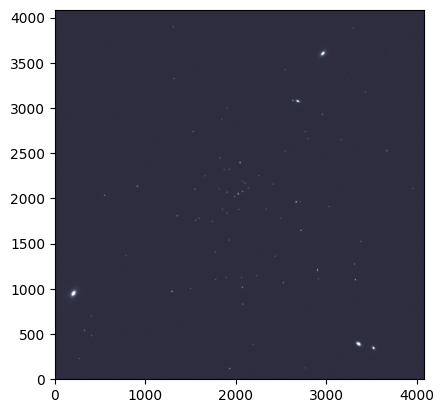
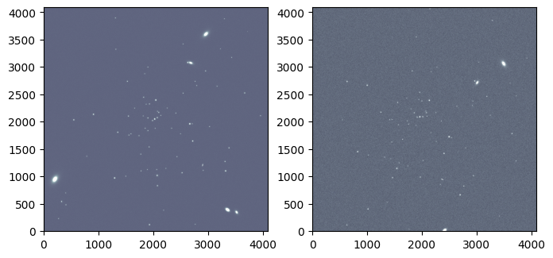

STIPS Tutorial#
Kernel Information and Read-Only Status#
To run this notebook, please select “Roman Research Nexus {VERSION}” kernel at the top right of your window. For example “Roman Research Nexus 2026.1”.
This notebook is read-only. You can run cells and make edits, but you must save changes to a different location. We recommend saving the notebook within your home directory, or to a new folder within your home (e.g. file > save notebook as > my-nbs/nb.ipynb). Note that a directory must exist before you attempt to add a notebook to it.
Introduction#
STIPS, or the Space Telescope Imaging Product Simulator, is a tool developed by STScI for simulating observations of astronomical scenes with the Roman Wide Field Instrument (WFI). Detailed documentation of the tool is available on the RDox pages.
STIPS can generate images of the entire WFI array, which consists of 18 detectors, also called Sensor Chip Assemblies (SCAs). For more information on the WFI detectors and focal plane array please see the RDox documentation. STIPS depends on the Pandeia Exposure time calculator and the STPSF point spread function (PSF) generator to create these simulations. Tutorial notebooks for both Pandeia and STPSF are also available. Users can choose to simulate between 1 and 18 SCAs in any of the WFI imaging filters, insert any number of point or extended sources, and specify a sky background estimate. STIPS will scale input fluxes to observed values, retrieve appropriate PSFs (interpolated to the positions of the sources), and add in additional noise terms.
As described in the Caveats to Using STIPS for Roman, neither pixel saturation nor non-linearity residuals are currently supported.
This notebook is a starter guide to simulating and manipulating scenes with STIPS.
Reference Data#
The cell below will check to ensure ancillary reference files for stips and pandeia packages are installed. If not, it will download the ancillary reference files and install them under your home directory (i.e., ${HOME}/refdata/).
Local Run Settings#
If you want to run the notebook in your local machine, refer to the information in local installation instructions before proceeding with the notebook. The instructions provide important information about setting up your environment, installing dependencies, and adding to your working directory scripts to help with the reference data installation.
Depending on which (if any) reference data are missing, this cell may take several minutes to execute.
On the Roman Research Nexus#
If you are working on the Nexus, then the ancillary reference data are pre-installed and this cell will execute instantly.
import os
import sys
import importlib.util
try:
import notebook_data_dependencies as ndd
local_script = True # Set to true when script is available locally
except ImportError:
local_script = False
# If running locally and script not in working dir,
# first get the directory with the script
if not local_script:
notebook_dir = os.getcwd()
shared_path = os.path.abspath(
os.path.join(notebook_dir, '..', '..', 'shared', 'notebook_data_dependencies.py')
)
if os.path.exists(shared_path):
print(f"Loading notebook_data_dependencies from shared location: {shared_path}")
spec = importlib.util.spec_from_file_location("notebook_data_dependencies", shared_path)
ndd = importlib.util.module_from_spec(spec)
sys.modules['notebook_data_dependencies'] = ndd # Optional: makes subsequent imports work
spec.loader.exec_module(ndd)
else:
raise FileNotFoundError(f"Local install script not found at {shared_path}")
# If working locally we first need to get the data used by some packages.
# Here the environment variables for the reference data
required = {
"stips_data": "stips",
"STPSF_PATH":"stpsf",
"pandeia_refdata": "pandeia_data",
"PSF_DIR":"pandeia_psf",
}
# Now let's retrieve the data for these packages
result = {}
for var, pkg in required.items():
if not os.getenv(var):
print(f"Running local data dependency installation for {var} ({pkg}) …")
result |= ndd.install_files(packages=pkg)
# Update environment variables (if necessary) and print reference data paths
print('Reference data paths set to:')
for k, v in result.items():
if not v['pre_installed']:
os.environ[k] = v['path']
print(os.environ[k])
print(f"\t{k} = {v['path']}")
else:
print("Running on RNN — data already available, skipping local install.")
Running on RNN — data already available, skipping local install.
Imports#
Besides the STIPS-related imports, the matplotlib imports will help visualize simulated images and astropy.io.fits will help write a FITS table on the fly.
import matplotlib as mpl
import matplotlib.pyplot as plt
import stips
import yaml
from astropy.io import fits
from stips.astro_image import AstroImage
from stips.observation_module import ObservationModule
from stips.scene_module import SceneModule
Environment report#
To verify the existing STIPS installation alongside its associated data files and dependencies, run the cell below. (Find the current software requirements in the STIPS documentation.)
print(stips.__env__report__)
STIPS Version 2.3.1 with Data Version 1.0.10 at /home/runner/refdata/stips_data.
STIPS Grid Generated with STIPS Version 1.1.0.
Pandeia Version 2026.2 with Data Version 2026.1 at /home/runner/refdata/pandeia_data-2026.1-roman and PSF Version 2026.1 at /home/runner/refdata/pandeia_psfs-2026.1-roman.
stpsf Version 2.2.0 with Data Version 2.2.0 at /home/runner/refdata/stpsf-data.
Examples#
Basic STIPS Usage#
This tutorial builds on the concepts introduced in the STIPS Overview article and is designed to walk through the phases of using STIPS at the most introductory level: creating a small scene, designing an observation, and generating a simulated image.
At its most fundamental level, STIPS takes a dictionary of observation and instrument parameters and a source catalog in order to return a simulated image. The source catalog can be either a user-defined input catalog in FITS format or it can be simulated using the STIPS SceneModule class (see below).
In this example, we start by specifying an observation dictionary for an image taken with the F129 filter, using the Detector 1 (WFI01), and with an exposure time of 300 seconds.
Note: We first need to update the path to the PSF cache using a YAML configuration file. A patch to fix the setting of this path in STIPS module calls will be released in the near future.
fix = {'psf_cache_location': os.environ["HOME"]}
with open('./stips_config.yaml', 'w') as file:
yaml.dump(fix, file)
Now we set up the observation dictionary:
obs = {'instrument': 'WFI', 'filters': ['F129'], 'detectors': 1,
'background': 'pandeia', 'observations_id': 42, 'exptime': 300,
'offsets': [{'offset_id': 1, 'offset_centre': False, 'offset_ra': 0.0,
'offset_dec': 0.0, 'offset_pa': 0.0}]
}
Then we feed the dictionary to an instance of the ObservationModule class, while also specifying the central coordinates (90 degrees right ascension and 30 degrees declination) and position angle (0 degrees) as keyword arguments.
obm = ObservationModule(obs, ra=90, dec=30, pa=0, seed=42, cores=6)
2026-06-01 19:36:00,075 INFO: Got offsets as [{'offset_id': 1, 'offset_centre': False, 'offset_ra': 0.0, 'offset_dec': 0.0, 'offset_pa': 0.0}]
2026-06-01 19:36:00,106 INFO: Adding observation with filter F129 and offset (0.0,0.0,0.0)
2026-06-01 19:36:00,107 INFO: Added 1 observations
2026-06-01 19:36:00,335 INFO: WFI with 1 detectors. Central offset (np.float64(2.065830864204697e-13), np.float64(-8.945310041616143e-14), 0)
Create a Simple Astronomical Scene#
The other requirement is an input source catalog. In this case, we generate and input a user-defined catalog. STIPS accepts several types of tables and catalogs in either the IPAC text or FITS BinTable format. This example uses a Mixed Catalog, which requires the following columns:
id: Object IDra: Right ascension (RA), in degreesdec: Declination (DEC), in degreesflux: Flux, inunits(defined below)type: Approximation used to profile a source. Options are'sersic'(for extended sources) orpointn: Sersic profile indexphi: Position angle of the Sersic profle’s major axis, in degreesratio: Ratio of the Sersic profile’s major and minor axesSince
n,phi,ratioonly apply to extended sources, they are ignored in rows wheretypeis set to'point'.
notes: Optional per-source commentsunits: One of‘p’for photons/s,‘e’for electrons/s,‘j’for Jansky, or‘c’for counts/s
Below, we create a catalog containing two sources located near the central coordinates specified in the ObservationModule.
cols = [
fits.Column(name='id', array=[1, 2], format='K'),
fits.Column(name='ra', array=[90.02, 90.03], format='D'),
fits.Column(name='dec', array=[29.98, 29.97], format='D'),
fits.Column(name='flux', array=[0.00023, 0.0004], format='D'),
fits.Column(name='type', array=['point', 'point'], format='8A'),
fits.Column(name='n', array=[0, 0], format='D'),
fits.Column(name='re', array=[0, 0], format='D'),
fits.Column(name='phi', array=[0, 0], format='D'),
fits.Column(name='ratio', array=[0, 0], format='D'),
fits.Column(name='notes', array=['', ''], format='8A'),
fits.Column(name='units', array=['j', 'j'], format='8A')
]
Next, we save the columns as a FITS table in the BinTable format and assign header keys that specify the filter and catalog type:
hdut = fits.BinTableHDU.from_columns(cols)
hdut.header['TYPE'] = 'mixed'
hdut.header['FILTER'] = 'F129'
And we save the catalog locally:
cat_file = 'catalog.fits'
hdut.writeto(cat_file, overwrite=True)
Simulate an Image#
With the observation module and source catalog in tow, STIPS can take over the image simulation process. First, we trigger the initialization of a new observation:
obm.nextObservation()
2026-06-01 19:36:00,363 INFO: Initializing Observation 0 of 1
2026-06-01 19:36:00,364 INFO: Observation Filter is F129
2026-06-01 19:36:00,364 INFO: Observation (RA,DEC) = (90.0,30.0) with PA=0.0
2026-06-01 19:36:00,364 INFO: Resetting
2026-06-01 19:36:00,582 INFO: Returning background 0.10970060309254233 for 'pandeia'
2026-06-01 19:36:00,583 INFO: Creating Detector WFI01 with (RA,DEC,PA) = (90.0,30.0,0.0)
2026-06-01 19:36:00,584 INFO: Creating Detector WFI01 with offset (0.0,0.0)
2026-06-01 19:36:00,593 INFO: Creating Instrument with Configuration {'aperture': 'imaging', 'detector': 'wfi01', 'disperser': None, 'filter': 'f129', 'instrument': 'wfi', 'mode': 'imaging'}
2026-06-01 19:36:00,623 INFO: WFI01: (RA, DEC, PA) := (90.0, 30.0, 0.0), detected as (90.0, 30.0, 0.0)
2026-06-01 19:36:00,623 INFO: Detector WFI01 created
2026-06-01 19:36:00,624 INFO: Reset Instrument
Creating pandeia instrument roman.wfi.imaging
0
Next, we simulate an image containing the sources from the catalog we created earlier. Then, we add error residuals to the image:
cat_name = obm.addCatalogue(cat_file)
2026-06-01 19:36:00,631 INFO: Running catalogue catalog.fits
2026-06-01 19:36:00,632 INFO: Adding catalogue catalog.fits
2026-06-01 19:36:00,640 INFO: Converting mixed catalogue
2026-06-01 19:36:00,640 INFO: Preparing output table
2026-06-01 19:36:00,654 INFO: Converting chunk 2
2026-06-01 19:36:00,663 INFO: Finished converting catalogue to internal format
2026-06-01 19:36:00,663 INFO: Adding catalogue to detector WFI01
2026-06-01 19:36:00,663 INFO: Adding catalogue catalog_42_conv_F129.fits to AstroImage WFI01
2026-06-01 19:36:00,683 INFO: Determining pixel co-ordinates
2026-06-01 19:36:00,684 INFO: Keeping 2 items
2026-06-01 19:36:00,684 INFO: Writing 2 stars
2026-06-01 19:36:00,685 INFO: Adding 2 point sources to AstroImage WFI01
2026-06-01 19:36:00,691 INFO: PSF File psf_WFI_2.3.1_F129_wfi01.fits to be put at /home/runner/psf_cache
2026-06-01 19:36:00,691 INFO: PSF File is /home/runner/psf_cache/psf_WFI_2.3.1_F129_wfi01.fits
2026-06-01 19:36:01,496 INFO: Adding point source 1 to AstroImage 2631.9672457028046,1410.503966182148
2026-06-01 19:36:01,508 INFO: Adding point source 2 to AstroImage 2915.5365753799083,1083.2929624680437
2026-06-01 19:36:01,531 INFO: Added catalogue catalog_42_conv_F129.fits to AstroImage WFI01
2026-06-01 19:36:01,531 INFO: Finished catalogue catalog.fits
obm.addError()
2026-06-01 19:36:01,536 INFO: Adding Error
2026-06-01 19:36:01,536 INFO: Adding residual error
2026-06-01 19:36:01,565 INFO: WFI01: (RA, DEC, PA) := (0.0, 0.0, 0.0), detected as (0.0, 0.0, 0.0)
2026-06-01 19:36:01,810 INFO: WFI01: (RA, DEC, PA) := (0.0, 0.0, 0.0), detected as (0.0, 0.0, 0.0)
2026-06-01 19:36:01,811 INFO: Created AstroImage WFI01 and imported data from FITS file err_flat_wfi.fits
2026-06-01 19:36:01,840 INFO: WFI01: (RA, DEC, PA) := (0.0, 0.0, 0.0), detected as (0.0, 0.0, 0.0)
2026-06-01 19:36:02,070 INFO: WFI01: (RA, DEC, PA) := (0.0, 0.0, 0.0), detected as (0.0, 0.0, 0.0)
2026-06-01 19:36:02,071 INFO: Created AstroImage WFI01 and imported data from FITS file err_rdrk_wfi.fits
2026-06-01 19:36:02,075 INFO: Adding error to detector WFI01
2026-06-01 19:36:02,076 INFO: Adding background
2026-06-01 19:36:02,259 INFO: Returning background 0.10970060309254233 for 'pandeia'
2026-06-01 19:36:02,260 INFO: Background is 0.10970060309254233 counts/s/pixel
2026-06-01 19:36:02,438 INFO: Returning background 0.10970060309254233 for 'pandeia'
2026-06-01 19:36:02,439 INFO: Added background of 0.10970060309254233 counts/s/pixel
2026-06-01 19:36:02,454 INFO: Inserting correct exposure time
2026-06-01 19:36:02,458 INFO: Cropping Down to base Detector Size
2026-06-01 19:36:02,459 INFO: Cropping convolved image down to detector size
2026-06-01 19:36:02,459 INFO: Taking [22:4110, 22:4110]
2026-06-01 19:36:02,468 INFO: WFI01: (RA, DEC, PA) := (90.0, 30.0, 0.0), detected as (90.0, 30.0, 0.0)
2026-06-01 19:36:02,469 INFO: Adding poisson noise
2026-06-01 19:36:02,917 INFO: Adding Poisson Noise with mean 0.00041581712372814624 and standard deviation 5.745736976603026
2026-06-01 19:36:02,919 INFO: Adding readnoise
2026-06-01 19:36:03,313 INFO: Adding readnoise with mean 0.0006565025541931391 and STDEV 12.00109577178955
2026-06-01 19:36:03,314 INFO: Adding flatfield residual
2026-06-01 19:36:03,349 INFO: Adding Flatfield residual with mean 1.0097910165786743 and standard deviation 0.0006765797734260559
2026-06-01 19:36:03,350 INFO: Adding dark residual
2026-06-01 19:36:03,384 INFO: Adding Dark residual with mean 0.20807769894599915 and standard deviation 1.1006208658218384
2026-06-01 19:36:03,385 INFO: Adding cosmic ray residual
2026-06-01 19:36:04,190 INFO: Adding Cosmic Ray residual with mean 0.0847659632563591 and standard deviation 1.9229004383087158
2026-06-01 19:36:04,194 INFO: Finished adding error
2026-06-01 19:36:04,195 INFO: Finished Adding Error
We finish by saving the outputs to a FITS file. The finalize() method of the ObservationModule object can also return a full field of view mosaic and a list of the simulation’s initial parameters.
fits_file_1, _, params_1 = obm.finalize(mosaic=False)
print(f"Output FITS file is {fits_file_1}")
2026-06-01 19:36:04,201 INFO: Converting to FITS file
2026-06-01 19:36:04,201 INFO: Converting detector WFI01 to FITS extension
2026-06-01 19:36:04,202 INFO: Creating Extension HDU from AstroImage WFI01
2026-06-01 19:36:04,204 INFO: Created Extension HDU from AstroImage WFI01
2026-06-01 19:36:04,232 INFO: Created FITS file /home/runner/work/roman_notebooks/roman_notebooks/notebooks/stips/sim_42_0.fits
Output FITS file is /home/runner/work/roman_notebooks/roman_notebooks/notebooks/stips/sim_42_0.fits
for prm in params_1:
print(prm)
Instrument: WFI
Filters: F129
Pixel Scale: (0.110,0.110) arcsec/pix
Pivot Wavelength: 1.290 um
Background Type: Pandeia background rate
Exposure Time: 300.0s
Input Unit: counts/s
Added Flatfield Residual: True
Added Dark Current Residual: True
Added Cosmic Ray Residual: True
Added Readnoise: True
Added Poisson Noise: True
Detector X size: 4088
Detector Y size: 4088
Random Seed: 42
img_1 = fits.getdata(fits_file_1)[1000:1500, 2500:3000]
plt.imshow(img_1, vmax=1.5, origin='lower', cmap='bone')
<matplotlib.image.AxesImage at 0x7f3496e1c1a0>

Generate Scenes Using STIPS Built-In Functions#
STIPS can simulate scenes by importing pre-existing catalogs (as in the first example) or by using built-in functionality that generates collections of stars or galaxies based on user-specified parameters. Below, we will use the STIPS SceneModule to generate a stellar population and a galactic population.
First, we specify a set of parameters that will be used in both scenes (RA, DEC, ID) and initialize two SceneModule instances, one for the stellar population and one for the galaxy population:
obs_prefix_1 = 'notebook_example1'
obs_ra = 150.0
obs_dec = -2.5
scm_stellar = SceneModule(out_prefix=obs_prefix_1, ra=obs_ra, dec=obs_dec)
scm_galactic = SceneModule(out_prefix=obs_prefix_1, ra=obs_ra, dec=obs_dec)
Log level: INFO
Log level: INFO
Create a Stellar Population#
Now we create a dictionary containing the parameters of the desired stellar population to pass to the SceneModule instance’s CreatePopulation() method. The following parameters are needed to define a stellar population:
Number of point sources
Upper and lower limit of the age of the stars (in years)
Upper and lower limit of the metallicity of the stars
Initial Mass Function
Binary fraction
Clustering (True/False)
Distribution type (Uniform, Inverse power-law)
Total radius of the population
Distance from the population
Offset RA and DEC from the center of the scene being created
A full accounting of each dictionary entry’s meaning can be found in the docstring of the CreatePopulation() method:
scm_stellar.CreatePopulation?
stellar_parameters = {'n_stars': 100, 'age_low': 7.5e12, 'age_high': 7.5e12,
'z_low': -2.0, 'z_high': -2.0, 'imf': 'salpeter',
'alpha': -2.35, 'binary_fraction': 0.1,
'distribution': 'invpow', 'clustered': True,
'radius': 100.0, 'radius_units': 'pc',
'distance_low': 20.0, 'distance_high': 20.0,
'offset_ra': 0.0, 'offset_dec': 0.0
}
We pass the dictionary to the stellar SceneModule instance’s CreatePopulation() method. Running the method will save the newly-generated population locally.
stellar_cat_file = scm_stellar.CreatePopulation(stellar_parameters)
print(f"Stellar population saved to file {stellar_cat_file}")
2026-06-01 19:36:04,483 INFO: Creating catalogue /home/runner/work/roman_notebooks/roman_notebooks/notebooks/stips/notebook_example1_stars_000.fits
2026-06-01 19:36:04,484 INFO: Creating age and metallicity numbers
2026-06-01 19:36:04,484 INFO: Created age and metallicity numbers
2026-06-01 19:36:04,485 INFO: Creating stars
2026-06-01 19:36:04,485 INFO: Age 1.35e+10
2026-06-01 19:36:04,486 INFO: Metallicity -2.000000
2026-06-01 19:36:04,486 INFO: Creating 100 stars
2026-06-01 19:36:04,799 INFO: Creating 100 objects, max radius 100.0, function invpow, scale 2.8
2026-06-01 19:36:04,856 INFO: Chunk 1: 107 stars
2026-06-01 19:36:04,869 INFO: Done creating catalogue
Stellar population saved to file /home/runner/work/roman_notebooks/roman_notebooks/notebooks/stips/notebook_example1_stars_000.fits
Create a Galactic Population#
Repeat the population generation process, now by creating a dictionary containing parameters of a desired galactic population. The following paramters are needed to define a galaxy population:
Number of galaxies
Upper and lower limit of the redshift
Upper and lower limit of the galactic radii
Range of V-band surface brightness magnitudes
Clustering (True/False)
Distribution type (Uniform, Inverse power-law)
Radius of the distribution
Offset RA and DEC from the center of the scene being created
A full accounting of each dictionary entry’s meaning can be found in the docstring of the CreateGalaxies() method:
scm_galactic.CreateGalaxies?
We pass the dictionary to the galaxy SceneModule instance’s CreateGalaxies() method, and save the result locally:
galaxy_parameters = {'n_gals': 10, 'z_low': 0.0, 'z_high': 0.2,
'rad_low': 0.01, 'rad_high': 2.0,
'sb_v_low': 30.0, 'sb_v_high': 25.0,
'distribution': 'uniform', 'clustered': False,
'radius': 200.0, 'radius_units': 'arcsec',
'offset_ra': 0.0, 'offset_dec': 0.0
}
galaxy_cat_file = scm_galactic.CreateGalaxies(galaxy_parameters)
print(f"Galaxy population saved to file {galaxy_cat_file}")
2026-06-01 19:36:04,884 INFO: Creating catalogue /home/runner/work/roman_notebooks/roman_notebooks/notebooks/stips/notebook_example1_gals_000.fits
2026-06-01 19:36:04,885 INFO: Wrote preamble
2026-06-01 19:36:04,885 INFO: Parameters are: {'n_gals': 10, 'z_low': 0.0, 'z_high': 0.2, 'rad_low': 0.01, 'rad_high': 2.0, 'sb_v_low': 30.0, 'sb_v_high': 25.0, 'distribution': 'uniform', 'clustered': False, 'radius': 200.0, 'radius_units': 'arcsec', 'offset_ra': 0.0, 'offset_dec': 0.0}
2026-06-01 19:36:04,886 INFO: Making Co-ordinates
2026-06-01 19:36:04,887 INFO: Creating 10 objects, max radius 200.0, function uniform, scale 2.8
2026-06-01 19:36:04,887 INFO: Converting Co-ordinates into RA,DEC
2026-06-01 19:36:04,898 INFO: Done creating catalogue
Galaxy population saved to file /home/runner/work/roman_notebooks/roman_notebooks/notebooks/stips/notebook_example1_gals_000.fits
Set up an Observation (First Pointing)#
Once we’ve created a scene, we can use STIPS to simulate as many exposures of it in as many orientations as we’d like. In STIPS, a single telescope pointing is called an offset, and a collection of exposures is an observation.
We start this subsection by creating a single offset that is dithered by 2 degrees in right ascension and rotated by 0.5 degrees in position angle from the center of the scene.
offset_1 = {'offset_id': 1, 'offset_centre': False,
# True would center each detector on the same on-sky point
'offset_ra': 2.0, 'offset_dec': 0.0, 'offset_pa': 0.5
}
The offset information is contained within an observation that is taken with the F129 filter, uses detectors WFI01 through WFI03, and has an exposure time of 1500 seconds. We also apply distortion and specify a sky background of 0.24 counts/s/pixel.
observation_parameters_1 = {'instrument': 'WFI', 'filters': ['F129'],
'detectors': 3, 'distortion': True,
'background': 0.24, 'observations_id': 1,
'exptime': 1500, 'offsets': [offset_1]
}
STIPS can also apply various types of error residuals to the observation. Here, we only include residuals from flat-fields and the dark current.
residuals_1 = {'residual_flat': True, 'residual_dark': True,
'residual_cosmic': False, 'residual_poisson': False,
'residual_readnoise': False
}
Next, we feed the observation dictionary to an instance of the ObservationModule class, alongside the observation ID, right ascension, and declination specified earlier in this example.
obm_1 = ObservationModule(observation_parameters_1, residual=residuals_1,
out_prefix=obs_prefix_1, ra=obs_ra, dec=obs_dec)
2026-06-01 19:36:04,918 INFO: Got offsets as [{'offset_id': 1, 'offset_centre': False, 'offset_ra': 2.0, 'offset_dec': 0.0, 'offset_pa': 0.5}]
2026-06-01 19:36:04,938 INFO: Adding observation with filter F129 and offset (2.0,0.0,0.5)
2026-06-01 19:36:04,938 INFO: Added 1 observations
2026-06-01 19:36:05,116 INFO: WFI with 3 detectors. Central offset (np.float64(1.7907664211548176e-13), np.float64(-8.945310041616143e-14), 0)
We call the ObservationModule object’s nextObservation() method to move to the first offset/filter combination (offset_1 and F129) contained in the object.
obm_1.nextObservation()
2026-06-01 19:36:05,121 INFO: Initializing Observation 0 of 1
2026-06-01 19:36:05,121 INFO: Observation Filter is F129
2026-06-01 19:36:05,122 INFO: Observation (RA,DEC) = (150.00055555555556,-2.5) with PA=0.5
2026-06-01 19:36:05,122 INFO: Resetting
2026-06-01 19:36:05,123 INFO: Returning background 0.24.
2026-06-01 19:36:05,123 INFO: Creating Detector WFI01 with (RA,DEC,PA) = (150.00055555555556,-2.5,0.5)
2026-06-01 19:36:05,124 INFO: Creating Detector WFI01 with offset (0.0,0.0)
2026-06-01 19:36:05,134 INFO: Creating Instrument with Configuration {'aperture': 'imaging', 'detector': 'wfi01', 'disperser': None, 'filter': 'f129', 'instrument': 'wfi', 'mode': 'imaging'}
2026-06-01 19:36:05,164 INFO: WFI01: (RA, DEC, PA) := (150.00055555555556, -2.5, 0.5), detected as (150.00055555555556, -2.5, 0.5000000000001229)
2026-06-01 19:36:05,165 INFO: Detector WFI01 created
2026-06-01 19:36:05,166 INFO: Creating Detector WFI02 with (RA,DEC,PA) = (150.00063361633363,-2.6463679052675504,0.5)
2026-06-01 19:36:05,166 INFO: Creating Detector WFI02 with offset (7.806077806812047e-05,-0.1463679052675503)
2026-06-01 19:36:05,176 INFO: WFI02: (RA, DEC, PA) := (150.00063361633363, -2.6463679052675504, 0.5), detected as (150.00063361633363, -2.6463679052675504, 0.5000000000001229)
2026-06-01 19:36:05,176 INFO: Detector WFI02 created
2026-06-01 19:36:05,177 INFO: Creating Detector WFI03 with (RA,DEC,PA) = (150.00076976694686,-2.777285221181246,0.5)
2026-06-01 19:36:05,178 INFO: Creating Detector WFI03 with offset (0.00021421139128143576,-0.2772852211812461)
2026-06-01 19:36:05,187 INFO: WFI03: (RA, DEC, PA) := (150.00076976694686, -2.777285221181246, 0.5), detected as (150.00076976694686, -2.777285221181246, 0.5000000000001229)
2026-06-01 19:36:05,187 INFO: Detector WFI03 created
2026-06-01 19:36:05,188 INFO: Reset Instrument
Creating pandeia instrument roman.wfi.imaging
0
Now that the observation is fully set up, we add the stellar and galactic populations to it. (Please note that each population may take about a minute to load.)
output_stellar_catalogs_1 = obm_1.addCatalogue(stellar_cat_file)
output_galaxy_catalogs_1 = obm_1.addCatalogue(galaxy_cat_file)
print(f"Output Catalogs are {output_stellar_catalogs_1} and "
f"{output_galaxy_catalogs_1}.")
2026-06-01 19:36:05,194 INFO: Running catalogue /home/runner/work/roman_notebooks/roman_notebooks/notebooks/stips/notebook_example1_stars_000.fits
2026-06-01 19:36:05,195 INFO: Adding catalogue /home/runner/work/roman_notebooks/roman_notebooks/notebooks/stips/notebook_example1_stars_000.fits
2026-06-01 19:36:05,205 INFO: Converting phoenix catalogue
2026-06-01 19:36:05,206 INFO: Preparing output table
2026-06-01 19:36:05,225 INFO: Converting chunk 2
2026-06-01 19:36:05,225 INFO: Converting Phoenix Table to Internal format
2026-06-01 19:36:05,226 INFO: 1 datasets
2026-06-01 19:36:05,566 INFO: Finished converting catalogue to internal format
2026-06-01 19:36:05,567 INFO: Adding catalogue to detector WFI01
2026-06-01 19:36:05,567 INFO: Adding catalogue notebook_example1_stars_000_01_conv_F129.fits to AstroImage WFI01
2026-06-01 19:36:05,588 INFO: Determining pixel co-ordinates
2026-06-01 19:36:05,589 INFO: Keeping 70 items
2026-06-01 19:36:05,590 INFO: Writing 70 stars
2026-06-01 19:36:05,590 INFO: Adding 70 point sources to AstroImage WFI01
2026-06-01 19:36:05,596 INFO: PSF File psf_WFI_2.3.1_F129_wfi01.fits to be put at /home/runner/psf_cache
2026-06-01 19:36:05,597 INFO: PSF File is /home/runner/psf_cache/psf_WFI_2.3.1_F129_wfi01.fits
2026-06-01 19:36:06,409 INFO: Adding point source 1 to AstroImage 2045.3507332137192,2076.054770607975
2026-06-01 19:36:06,420 INFO: Adding point source 2 to AstroImage 2006.9823179050243,2038.8239849437052
2026-06-01 19:36:06,432 INFO: Adding point source 3 to AstroImage 2157.6275147516935,2133.2211015380212
2026-06-01 19:36:06,443 INFO: Adding point source 4 to AstroImage 2120.589955851803,2187.2853961009905
2026-06-01 19:36:06,454 INFO: Adding point source 5 to AstroImage 1922.3283721873772,2086.226220706984
2026-06-01 19:36:06,465 INFO: Adding point source 6 to AstroImage 2354.9852409776267,1898.2103780158711
2026-06-01 19:36:06,476 INFO: Adding point source 7 to AstroImage 1891.0855614472532,2337.8583683204643
2026-06-01 19:36:06,488 INFO: Adding point source 8 to AstroImage 1567.7294436950383,2121.0021709253106
2026-06-01 19:36:06,499 INFO: Adding point source 9 to AstroImage 2046.836178495134,2065.1585094272887
2026-06-01 19:36:06,511 INFO: Adding point source 10 to AstroImage 2093.607225370763,2092.678042900965
2026-06-01 19:36:06,522 INFO: Adding point source 11 to AstroImage 2096.5232546793695,2208.3138568793897
2026-06-01 19:36:06,533 INFO: Adding point source 12 to AstroImage 2431.6318977086953,2174.9699319942047
2026-06-01 19:36:06,544 INFO: Adding point source 13 to AstroImage 1945.8629558178652,1557.5573217346346
2026-06-01 19:36:06,555 INFO: Adding point source 14 to AstroImage 1950.742506155812,2342.188783307539
2026-06-01 19:36:06,566 INFO: Adding point source 15 to AstroImage 2731.4836994955813,1980.6321715809452
2026-06-01 19:36:06,577 INFO: Adding point source 16 to AstroImage 2564.87847686765,2539.742469815901
2026-06-01 19:36:06,588 INFO: Adding point source 17 to AstroImage 2453.3595323633467,1379.1622276446924
2026-06-01 19:36:06,599 INFO: Adding point source 18 to AstroImage 1864.230193078306,2893.6657616992334
2026-06-01 19:36:06,611 INFO: Adding point source 19 to AstroImage 1547.5960099058127,2755.8525015814685
2026-06-01 19:36:06,622 INFO: Adding point source 20 to AstroImage 2739.619510911831,1664.9000320704445
2026-06-01 19:36:06,633 INFO: Adding point source 21 to AstroImage 2082.5136740121006,1144.2344157319865
2026-06-01 19:36:06,644 INFO: Adding point source 22 to AstroImage 1575.8913235922328,1774.1809829862718
2026-06-01 19:36:06,656 INFO: Adding point source 23 to AstroImage 1912.8116935504515,1144.7105668845318
2026-06-01 19:36:06,667 INFO: Adding point source 24 to AstroImage 2812.9150635767346,2677.888836281972
2026-06-01 19:36:06,678 INFO: Adding point source 25 to AstroImage 929.8050496524038,2152.7981038884514
2026-06-01 19:36:06,689 INFO: Adding point source 26 to AstroImage 2095.9819573495683,849.3330387156557
2026-06-01 19:36:06,700 INFO: Adding point source 27 to AstroImage 1519.1180306744645,1022.6807861420141
2026-06-01 19:36:06,712 INFO: Adding point source 28 to AstroImage 2649.774500877268,3098.4488474019213
2026-06-01 19:36:06,723 INFO: Adding point source 29 to AstroImage 3183.590421058566,2665.64759826119
2026-06-01 19:36:06,734 INFO: Adding point source 30 to AstroImage 1613.7109239161546,1796.8529768568071
2026-06-01 19:36:06,745 INFO: Adding point source 31 to AstroImage 1372.0629698696948,1824.7505736868907
2026-06-01 19:36:06,756 INFO: Adding point source 32 to AstroImage 2784.30942238645,2755.180024905616
2026-06-01 19:36:06,767 INFO: Adding point source 33 to AstroImage 3401.951670623499,1540.611232233232
2026-06-01 19:36:06,779 INFO: Adding point source 34 to AstroImage 1836.2087148800765,2123.441806358865
2026-06-01 19:36:06,790 INFO: Adding point source 35 to AstroImage 1845.0227626612902,2464.8397276935675
2026-06-01 19:36:06,801 INFO: Adding point source 36 to AstroImage 2975.1007335515064,2945.3729637689853
2026-06-01 19:36:06,812 INFO: Adding point source 37 to AstroImage 2054.824956687597,1896.159093080192
2026-06-01 19:36:06,823 INFO: Adding point source 38 to AstroImage 2066.695939280229,2413.3517127471027
2026-06-01 19:36:06,834 INFO: Adding point source 39 to AstroImage 1921.9137742823336,3015.2585530782767
2026-06-01 19:36:06,845 INFO: Adding point source 40 to AstroImage 570.4552665251658,2051.8409168731764
2026-06-01 19:36:06,856 INFO: Adding point source 41 to AstroImage 2786.1440733133695,144.79054285068946
2026-06-01 19:36:06,867 INFO: Adding point source 42 to AstroImage 807.1933300782619,1386.5048355191407
2026-06-01 19:36:06,878 INFO: Adding point source 43 to AstroImage 2250.7440786842085,1165.7173645989762
2026-06-01 19:36:06,890 INFO: Adding point source 44 to AstroImage 3977.168196689947,2127.0703816879
2026-06-01 19:36:06,901 INFO: Adding point source 45 to AstroImage 1873.4169749765128,1898.0252489607137
2026-06-01 19:36:06,912 INFO: Adding point source 46 to AstroImage 2273.9802198385587,2267.8513618770285
2026-06-01 19:36:06,923 INFO: Adding point source 47 to AstroImage 1760.4197661271166,1762.7980612378194
2026-06-01 19:36:06,934 INFO: Adding point source 48 to AstroImage 2931.806369084683,1129.0905736012141
2026-06-01 19:36:06,945 INFO: Adding point source 49 to AstroImage 1338.0488732134686,3341.079635400194
2026-06-01 19:36:06,956 INFO: Adding point source 50 to AstroImage 2564.3231666868933,3438.197475950624
2026-06-01 19:36:06,967 INFO: Adding point source 51 to AstroImage 1792.401118822219,1425.9330093032872
2026-06-01 19:36:06,978 INFO: Adding point source 52 to AstroImage 1329.1353319915033,3912.932621586827
2026-06-01 19:36:06,989 INFO: Adding point source 53 to AstroImage 3317.444750503694,3897.4982214814213
2026-06-01 19:36:07,001 INFO: Adding point source 54 to AstroImage 1922.5653065046122,1854.6817572032414
2026-06-01 19:36:07,012 INFO: Adding point source 55 to AstroImage 2687.0868546861157,1978.9194756506345
2026-06-01 19:36:07,023 INFO: Adding point source 56 to AstroImage 1314.8033101220792,990.477666479653
2026-06-01 19:36:07,034 INFO: Adding point source 57 to AstroImage 3329.292820230379,1292.4537052317955
2026-06-01 19:36:07,045 INFO: Adding point source 58 to AstroImage 426.98229198064473,500.742797903009
2026-06-01 19:36:07,056 INFO: Adding point source 59 to AstroImage 1679.833646178087,2266.091354395471
2026-06-01 19:36:07,067 INFO: Adding point source 60 to AstroImage 3450.892432541822,3192.139687939696
2026-06-01 19:36:07,078 INFO: Adding point source 61 to AstroImage 2516.752566155596,1797.2895933785562
2026-06-01 19:36:07,089 INFO: Adding point source 62 to AstroImage 1798.004751146695,1119.7490818523888
2026-06-01 19:36:07,101 INFO: Adding point source 63 to AstroImage 423.2080029825727,717.8827163122614
2026-06-01 19:36:07,112 INFO: Adding point source 64 to AstroImage 292.6689756207029,249.29576373000646
2026-06-01 19:36:07,123 INFO: Adding point source 65 to AstroImage 1951.1010425758543,137.92503584511428
2026-06-01 19:36:07,134 INFO: Adding point source 66 to AstroImage 2209.3446128867377,401.717403396789
2026-06-01 19:36:07,145 INFO: Adding point source 67 to AstroImage 3688.3371490589443,2543.0173698026492
2026-06-01 19:36:07,156 INFO: Adding point source 68 to AstroImage 3047.735472511224,1929.5045414119613
2026-06-01 19:36:07,167 INFO: Adding point source 69 to AstroImage 3340.2173237037014,1119.8355854534661
2026-06-01 19:36:07,178 INFO: Adding point source 70 to AstroImage 2545.590714286663,1085.1364360867685
2026-06-01 19:36:07,203 INFO: Added catalogue notebook_example1_stars_000_01_conv_F129.fits to AstroImage WFI01
2026-06-01 19:36:07,204 INFO: Adding catalogue to detector WFI02
2026-06-01 19:36:07,204 INFO: Adding catalogue notebook_example1_stars_000_01_conv_F129.fits to AstroImage WFI02
2026-06-01 19:36:07,224 INFO: Determining pixel co-ordinates
2026-06-01 19:36:07,225 INFO: Keeping 3 items
2026-06-01 19:36:07,226 INFO: Writing 3 stars
2026-06-01 19:36:07,226 INFO: Adding 3 point sources to AstroImage WFI02
2026-06-01 19:36:07,232 INFO: PSF File psf_WFI_2.3.1_F129_wfi02.fits to be put at /home/runner/psf_cache
2026-06-01 19:36:07,232 INFO: PSF File is /home/runner/psf_cache/psf_WFI_2.3.1_F129_wfi02.fits
2026-06-01 19:36:08,020 INFO: Adding point source 1 to AstroImage 147.47136864334198,4124.973822327998
2026-06-01 19:36:08,028 INFO: Adding point source 2 to AstroImage 2225.8491225960925,3764.4016062777846
2026-06-01 19:36:08,039 INFO: Adding point source 3 to AstroImage 672.343071541439,3748.2447206036845
2026-06-01 19:36:08,063 INFO: Added catalogue notebook_example1_stars_000_01_conv_F129.fits to AstroImage WFI02
2026-06-01 19:36:08,064 INFO: Adding catalogue to detector WFI03
2026-06-01 19:36:08,064 INFO: Adding catalogue notebook_example1_stars_000_01_conv_F129.fits to AstroImage WFI03
2026-06-01 19:36:08,077 INFO: Determining pixel co-ordinates
2026-06-01 19:36:08,078 INFO: Keeping 0 items
2026-06-01 19:36:08,079 INFO: Added catalogue notebook_example1_stars_000_01_conv_F129.fits to AstroImage WFI03
2026-06-01 19:36:08,080 INFO: Finished catalogue /home/runner/work/roman_notebooks/roman_notebooks/notebooks/stips/notebook_example1_stars_000.fits
2026-06-01 19:36:08,080 INFO: Running catalogue /home/runner/work/roman_notebooks/roman_notebooks/notebooks/stips/notebook_example1_gals_000.fits
2026-06-01 19:36:08,080 INFO: Adding catalogue /home/runner/work/roman_notebooks/roman_notebooks/notebooks/stips/notebook_example1_gals_000.fits
2026-06-01 19:36:08,089 INFO: Converting bc95 catalogue
2026-06-01 19:36:08,089 INFO: Preparing output table
2026-06-01 19:36:08,105 INFO: Converting chunk 2
2026-06-01 19:36:08,105 INFO: Converting BC95 Catalogue
2026-06-01 19:36:08,106 INFO: Normalization Bandpass is johnson,v (<class 'str'>)
2026-06-01 19:36:08,106 INFO: Normalization Bandpass is johnson,v
2026-06-01 19:36:08,116 WARNING: DataConfigurationError: Error loading normalization bandpass: johnson_v EngineInputError("Invalid keys provided: ['johnson_v'] ('johnson_v')")
2026-06-01 19:36:08,143 WARNING: DataConfigurationError: Error loading normalization bandpass: johnson_v EngineInputError("Invalid keys provided: ['johnson_v'] ('johnson_v')")
2026-06-01 19:36:08,169 WARNING: DataConfigurationError: Error loading normalization bandpass: johnson_v EngineInputError("Invalid keys provided: ['johnson_v'] ('johnson_v')")
2026-06-01 19:36:08,196 WARNING: DataConfigurationError: Error loading normalization bandpass: johnson_v EngineInputError("Invalid keys provided: ['johnson_v'] ('johnson_v')")
2026-06-01 19:36:08,222 WARNING: DataConfigurationError: Error loading normalization bandpass: johnson_v EngineInputError("Invalid keys provided: ['johnson_v'] ('johnson_v')")
2026-06-01 19:36:08,248 WARNING: DataConfigurationError: Error loading normalization bandpass: johnson_v EngineInputError("Invalid keys provided: ['johnson_v'] ('johnson_v')")
2026-06-01 19:36:08,275 WARNING: DataConfigurationError: Error loading normalization bandpass: johnson_v EngineInputError("Invalid keys provided: ['johnson_v'] ('johnson_v')")
2026-06-01 19:36:08,301 WARNING: DataConfigurationError: Error loading normalization bandpass: johnson_v EngineInputError("Invalid keys provided: ['johnson_v'] ('johnson_v')")
2026-06-01 19:36:08,327 WARNING: DataConfigurationError: Error loading normalization bandpass: johnson_v EngineInputError("Invalid keys provided: ['johnson_v'] ('johnson_v')")
2026-06-01 19:36:08,354 WARNING: DataConfigurationError: Error loading normalization bandpass: johnson_v EngineInputError("Invalid keys provided: ['johnson_v'] ('johnson_v')")
2026-06-01 19:36:08,379 INFO: Finished converting catalogue to internal format
2026-06-01 19:36:08,380 INFO: Adding catalogue to detector WFI01
2026-06-01 19:36:08,380 INFO: Adding catalogue notebook_example1_gals_000_01_conv_F129.fits to AstroImage WFI01
2026-06-01 19:36:08,401 INFO: Determining pixel co-ordinates
2026-06-01 19:36:08,401 INFO: Keeping 10 items
2026-06-01 19:36:08,402 INFO: Writing 10 galaxies
2026-06-01 19:36:08,403 INFO: Starting Sersic Profiles at Mon Jun 1 19:36:08 2026
2026-06-01 19:36:08,403 INFO: Index is 0
2026-06-01 19:36:11,147 INFO: PSF File psf_WFI_2.3.1_F129_wfi01.fits to be put at /home/runner/psf_cache
2026-06-01 19:36:11,148 INFO: PSF File is /home/runner/psf_cache/psf_WFI_2.3.1_F129_wfi01.fits
2026-06-01 19:36:13,907 INFO: Finished Galaxy 1 of 10
2026-06-01 19:36:13,908 INFO: Index is 1
Step 0 duration in WFI01 with fast_galaxy=False and convolve_galaxy=True: 5.5046 seconds, Running total: 5.5046 seconds
2026-06-01 19:36:16,667 INFO: PSF File psf_WFI_2.3.1_F129_wfi01.fits to be put at /home/runner/psf_cache
2026-06-01 19:36:16,668 INFO: PSF File is /home/runner/psf_cache/psf_WFI_2.3.1_F129_wfi01.fits
2026-06-01 19:36:19,392 INFO: Finished Galaxy 2 of 10
2026-06-01 19:36:19,393 INFO: Index is 2
Step 1 duration in WFI01 with fast_galaxy=False and convolve_galaxy=True: 5.4850 seconds, Running total: 10.9897 seconds
2026-06-01 19:36:22,132 INFO: PSF File psf_WFI_2.3.1_F129_wfi01.fits to be put at /home/runner/psf_cache
2026-06-01 19:36:22,132 INFO: PSF File is /home/runner/psf_cache/psf_WFI_2.3.1_F129_wfi01.fits
2026-06-01 19:36:24,864 INFO: Finished Galaxy 3 of 10
2026-06-01 19:36:24,865 INFO: Index is 3
Step 2 duration in WFI01 with fast_galaxy=False and convolve_galaxy=True: 5.4719 seconds, Running total: 16.4617 seconds
2026-06-01 19:36:27,597 INFO: PSF File psf_WFI_2.3.1_F129_wfi01.fits to be put at /home/runner/psf_cache
2026-06-01 19:36:27,598 INFO: PSF File is /home/runner/psf_cache/psf_WFI_2.3.1_F129_wfi01.fits
2026-06-01 19:36:30,350 INFO: Finished Galaxy 4 of 10
2026-06-01 19:36:30,351 INFO: Index is 4
Step 3 duration in WFI01 with fast_galaxy=False and convolve_galaxy=True: 5.4859 seconds, Running total: 21.9477 seconds
2026-06-01 19:36:33,103 INFO: PSF File psf_WFI_2.3.1_F129_wfi01.fits to be put at /home/runner/psf_cache
2026-06-01 19:36:33,104 INFO: PSF File is /home/runner/psf_cache/psf_WFI_2.3.1_F129_wfi01.fits
2026-06-01 19:36:35,826 INFO: Finished Galaxy 5 of 10
2026-06-01 19:36:35,827 INFO: Index is 5
Step 4 duration in WFI01 with fast_galaxy=False and convolve_galaxy=True: 5.4760 seconds, Running total: 27.4237 seconds
2026-06-01 19:36:38,559 INFO: PSF File psf_WFI_2.3.1_F129_wfi01.fits to be put at /home/runner/psf_cache
2026-06-01 19:36:38,560 INFO: PSF File is /home/runner/psf_cache/psf_WFI_2.3.1_F129_wfi01.fits
2026-06-01 19:36:41,303 INFO: Finished Galaxy 6 of 10
2026-06-01 19:36:41,304 INFO: Index is 6
Step 5 duration in WFI01 with fast_galaxy=False and convolve_galaxy=True: 5.4766 seconds, Running total: 32.9004 seconds
2026-06-01 19:36:44,049 INFO: PSF File psf_WFI_2.3.1_F129_wfi01.fits to be put at /home/runner/psf_cache
2026-06-01 19:36:44,050 INFO: PSF File is /home/runner/psf_cache/psf_WFI_2.3.1_F129_wfi01.fits
2026-06-01 19:36:46,772 INFO: Finished Galaxy 7 of 10
2026-06-01 19:36:46,773 INFO: Index is 7
Step 6 duration in WFI01 with fast_galaxy=False and convolve_galaxy=True: 5.4689 seconds, Running total: 38.3693 seconds
2026-06-01 19:36:49,516 INFO: PSF File psf_WFI_2.3.1_F129_wfi01.fits to be put at /home/runner/psf_cache
2026-06-01 19:36:49,517 INFO: PSF File is /home/runner/psf_cache/psf_WFI_2.3.1_F129_wfi01.fits
2026-06-01 19:36:52,242 INFO: Finished Galaxy 8 of 10
2026-06-01 19:36:52,243 INFO: Index is 8
Step 7 duration in WFI01 with fast_galaxy=False and convolve_galaxy=True: 5.4700 seconds, Running total: 43.8393 seconds
2026-06-01 19:36:54,057 INFO: PSF File psf_WFI_2.3.1_F129_wfi01.fits to be put at /home/runner/psf_cache
2026-06-01 19:36:54,058 INFO: PSF File is /home/runner/psf_cache/psf_WFI_2.3.1_F129_wfi01.fits
2026-06-01 19:36:56,777 INFO: Finished Galaxy 9 of 10
2026-06-01 19:36:56,778 INFO: Index is 9
Step 8 duration in WFI01 with fast_galaxy=False and convolve_galaxy=True: 4.5348 seconds, Running total: 48.3742 seconds
2026-06-01 19:36:59,118 INFO: PSF File psf_WFI_2.3.1_F129_wfi01.fits to be put at /home/runner/psf_cache
2026-06-01 19:36:59,119 INFO: PSF File is /home/runner/psf_cache/psf_WFI_2.3.1_F129_wfi01.fits
2026-06-01 19:37:01,840 INFO: Finished Galaxy 10 of 10
2026-06-01 19:37:01,841 INFO: Finishing Sersic Profiles at Mon Jun 1 19:37:01 2026
2026-06-01 19:37:01,856 INFO: Added catalogue notebook_example1_gals_000_01_conv_F129.fits to AstroImage WFI01
2026-06-01 19:37:01,857 INFO: Adding catalogue to detector WFI02
2026-06-01 19:37:01,857 INFO: Adding catalogue notebook_example1_gals_000_01_conv_F129.fits to AstroImage WFI02
2026-06-01 19:37:01,870 INFO: Determining pixel co-ordinates
2026-06-01 19:37:01,871 INFO: Keeping 0 items
2026-06-01 19:37:01,873 INFO: Added catalogue notebook_example1_gals_000_01_conv_F129.fits to AstroImage WFI02
2026-06-01 19:37:01,873 INFO: Adding catalogue to detector WFI03
2026-06-01 19:37:01,874 INFO: Adding catalogue notebook_example1_gals_000_01_conv_F129.fits to AstroImage WFI03
2026-06-01 19:37:01,886 INFO: Determining pixel co-ordinates
2026-06-01 19:37:01,887 INFO: Keeping 0 items
2026-06-01 19:37:01,889 INFO: Added catalogue notebook_example1_gals_000_01_conv_F129.fits to AstroImage WFI03
2026-06-01 19:37:01,889 INFO: Finished catalogue /home/runner/work/roman_notebooks/roman_notebooks/notebooks/stips/notebook_example1_gals_000.fits
Step 9 duration in WFI01 with fast_galaxy=False and convolve_galaxy=True: 5.0633 seconds, Running total: 53.4375 seconds
Output Catalogs are ['/home/runner/work/roman_notebooks/roman_notebooks/notebooks/stips/notebook_example1_stars_000_01_conv_F129.fits', '/home/runner/work/roman_notebooks/roman_notebooks/notebooks/stips/notebook_example1_stars_000_01_conv_F129_observed_WFI01.fits', '/home/runner/work/roman_notebooks/roman_notebooks/notebooks/stips/notebook_example1_stars_000_01_conv_F129_observed_WFI02.fits', '/home/runner/work/roman_notebooks/roman_notebooks/notebooks/stips/notebook_example1_stars_000_01_conv_F129_observed_WFI03.fits'] and ['/home/runner/work/roman_notebooks/roman_notebooks/notebooks/stips/notebook_example1_gals_000_01_conv_F129.fits', '/home/runner/work/roman_notebooks/roman_notebooks/notebooks/stips/notebook_example1_gals_000_01_conv_F129_observed_WFI01.fits', '/home/runner/work/roman_notebooks/roman_notebooks/notebooks/stips/notebook_example1_gals_000_01_conv_F129_observed_WFI02.fits', '/home/runner/work/roman_notebooks/roman_notebooks/notebooks/stips/notebook_example1_gals_000_01_conv_F129_observed_WFI03.fits'].
obm_1.addError()
2026-06-01 19:37:01,894 INFO: Adding Error
2026-06-01 19:37:01,894 INFO: Adding residual error
2026-06-01 19:37:01,924 INFO: WFI01: (RA, DEC, PA) := (0.0, 0.0, 0.0), detected as (0.0, 0.0, 0.0)
2026-06-01 19:37:02,153 INFO: WFI01: (RA, DEC, PA) := (0.0, 0.0, 0.0), detected as (0.0, 0.0, 0.0)
2026-06-01 19:37:02,154 INFO: Created AstroImage WFI01 and imported data from FITS file err_flat_wfi.fits
2026-06-01 19:37:02,184 INFO: WFI01: (RA, DEC, PA) := (0.0, 0.0, 0.0), detected as (0.0, 0.0, 0.0)
2026-06-01 19:37:02,412 INFO: WFI01: (RA, DEC, PA) := (0.0, 0.0, 0.0), detected as (0.0, 0.0, 0.0)
2026-06-01 19:37:02,413 INFO: Created AstroImage WFI01 and imported data from FITS file err_rdrk_wfi.fits
2026-06-01 19:37:02,417 INFO: Adding error to detector WFI01
2026-06-01 19:37:02,417 INFO: Adding background
2026-06-01 19:37:02,418 INFO: Returning background 0.24.
2026-06-01 19:37:02,418 INFO: Background is 0.24 counts/s/pixel
2026-06-01 19:37:02,419 INFO: Returning background 0.24.
2026-06-01 19:37:02,419 INFO: Added background of 0.24 counts/s/pixel
2026-06-01 19:37:02,430 INFO: Inserting correct exposure time
2026-06-01 19:37:02,434 INFO: Cropping Down to base Detector Size
2026-06-01 19:37:02,434 INFO: Cropping convolved image down to detector size
2026-06-01 19:37:02,435 INFO: Taking [22:4110, 22:4110]
2026-06-01 19:37:02,443 INFO: WFI01: (RA, DEC, PA) := (150.00055555555556, -2.5, 0.5000000000001229), detected as (150.00055555555556, -2.5, 0.5000000000001104)
2026-06-01 19:37:02,444 INFO: Adding flatfield residual
2026-06-01 19:37:02,480 INFO: Adding Flatfield residual with mean 1.0097910165786743 and standard deviation 0.0006765797734260559
2026-06-01 19:37:02,481 INFO: Adding dark residual
2026-06-01 19:37:02,516 INFO: Adding Dark residual with mean 1.0403887033462524 and standard deviation 5.5031046867370605
2026-06-01 19:37:02,519 INFO: Adding error to detector WFI02
2026-06-01 19:37:02,520 INFO: Adding background
2026-06-01 19:37:02,520 INFO: Returning background 0.24.
2026-06-01 19:37:02,521 INFO: Background is 0.24 counts/s/pixel
2026-06-01 19:37:02,521 INFO: Returning background 0.24.
2026-06-01 19:37:02,522 INFO: Added background of 0.24 counts/s/pixel
2026-06-01 19:37:02,537 INFO: Inserting correct exposure time
2026-06-01 19:37:02,540 INFO: Cropping Down to base Detector Size
2026-06-01 19:37:02,541 INFO: Cropping convolved image down to detector size
2026-06-01 19:37:02,541 INFO: Taking [22:4110, 22:4110]
2026-06-01 19:37:02,550 INFO: WFI02: (RA, DEC, PA) := (150.00063361633363, -2.6463679052675504, 0.5000000000001229), detected as (150.00063361633363, -2.6463679052675504, 0.5000000000001104)
2026-06-01 19:37:02,551 INFO: Adding flatfield residual
2026-06-01 19:37:02,586 INFO: Adding Flatfield residual with mean 1.0097910165786743 and standard deviation 0.0006765797734260559
2026-06-01 19:37:02,587 INFO: Adding dark residual
2026-06-01 19:37:02,622 INFO: Adding Dark residual with mean 1.0403887033462524 and standard deviation 5.5031046867370605
2026-06-01 19:37:02,626 INFO: Adding error to detector WFI03
2026-06-01 19:37:02,626 INFO: Adding background
2026-06-01 19:37:02,627 INFO: Returning background 0.24.
2026-06-01 19:37:02,627 INFO: Background is 0.24 counts/s/pixel
2026-06-01 19:37:02,628 INFO: Returning background 0.24.
2026-06-01 19:37:02,628 INFO: Added background of 0.24 counts/s/pixel
2026-06-01 19:37:02,646 INFO: Inserting correct exposure time
2026-06-01 19:37:02,649 INFO: Cropping Down to base Detector Size
2026-06-01 19:37:02,650 INFO: Cropping convolved image down to detector size
2026-06-01 19:37:02,650 INFO: Taking [22:4110, 22:4110]
2026-06-01 19:37:02,659 INFO: WFI03: (RA, DEC, PA) := (150.00076976694686, -2.777285221181246, 0.5000000000001229), detected as (150.00076976694686, -2.777285221181246, 0.5000000000001104)
2026-06-01 19:37:02,660 INFO: Adding flatfield residual
2026-06-01 19:37:02,695 INFO: Adding Flatfield residual with mean 1.0097910165786743 and standard deviation 0.0006765797734260559
2026-06-01 19:37:02,695 INFO: Adding dark residual
2026-06-01 19:37:02,730 INFO: Adding Dark residual with mean 1.0403887033462524 and standard deviation 5.5031046867370605
2026-06-01 19:37:02,734 INFO: Finished adding error
2026-06-01 19:37:02,736 INFO: Finished Adding Error
As before, finish by saving the simulated image to a FITS file.
fits_file_1, _, params_1 = obm_1.finalize(mosaic=False)
print(f"Output FITS file is {fits_file_1}")
2026-06-01 19:37:02,741 INFO: Converting to FITS file
2026-06-01 19:37:02,742 INFO: Converting detector WFI01 to FITS extension
2026-06-01 19:37:02,742 INFO: Creating Extension HDU from AstroImage WFI01
2026-06-01 19:37:02,745 INFO: Created Extension HDU from AstroImage WFI01
2026-06-01 19:37:02,746 INFO: Converting detector WFI02 to FITS extension
2026-06-01 19:37:02,747 INFO: Creating Extension HDU from AstroImage WFI02
2026-06-01 19:37:02,749 INFO: Created Extension HDU from AstroImage WFI02
2026-06-01 19:37:02,749 INFO: Converting detector WFI03 to FITS extension
2026-06-01 19:37:02,750 INFO: Creating Extension HDU from AstroImage WFI03
2026-06-01 19:37:02,752 INFO: Created Extension HDU from AstroImage WFI03
2026-06-01 19:37:02,833 INFO: Created FITS file /home/runner/work/roman_notebooks/roman_notebooks/notebooks/stips/notebook_example1_1_0.fits
Output FITS file is /home/runner/work/roman_notebooks/roman_notebooks/notebooks/stips/notebook_example1_1_0.fits
img_1 = fits.getdata(fits_file_1, ext=1)
plt.imshow(img_1, vmin=0.15, vmax=0.6, origin='lower', cmap='bone')
<matplotlib.image.AxesImage at 0x7f3493bd0410>

Modify an Observation (by Adding a Second Pointing)#
To observe the same scene under different conditions, we make a new ObservationModule object that takes updated versions of the input observation parameter and residual dictionaries. The collection of resulting ObservationModule objects can be thought of as a dithered set of observations.
For the second observation, we assume an offset of 10 degrees in right ascension and rotated by 27 degrees in position angle from the center of the scene.
offset_2 = {'offset_id': 1, 'offset_centre': False,
# True centers each detector on same point
'offset_ra': 10.0, 'offset_dec': 0.0, 'offset_pa': 27
}
The second observation is identical to the first (F129 filter, detectors WFI01 through WFI03, exposure time of 1500 seconds, distortion, and a sky background of 0.24 counts/s/pixel) with the exception of the offset parameters.
observation_parameters_2 = {'instrument': 'WFI', 'filters': ['F129'],
'detectors': 3, 'distortion': True,
'background': 0.24, 'observations_id': 1,
'exptime': 1500, 'offsets': [offset_2]
}
This time, we include residuals from the flat-field and read noise.
residuals_2 = {'residual_flat': True, 'residual_dark': False,
'residual_cosmic': False, 'residual_poisson': False,
'residual_readnoise': True
}
We create the new ObservationModule object and initialize it for a simulation.
obs_prefix_2 = 'notebook_example2'
obm_2 = ObservationModule(observation_parameters_2, residuals=residuals_2,
out_prefix=obs_prefix_2, ra=obs_ra, dec=obs_dec)
2026-06-01 19:37:04,782 INFO: Got offsets as [{'offset_id': 1, 'offset_centre': False, 'offset_ra': 10.0, 'offset_dec': 0.0, 'offset_pa': 27}]
2026-06-01 19:37:04,812 INFO: Adding observation with filter F129 and offset (10.0,0.0,27)
2026-06-01 19:37:04,813 INFO: Added 1 observations
2026-06-01 19:37:04,989 INFO: WFI with 3 detectors. Central offset (np.float64(1.7907664211548176e-13), np.float64(-8.945310041616143e-14), 0)
obm_2.nextObservation()
2026-06-01 19:37:04,994 INFO: Initializing Observation 0 of 1
2026-06-01 19:37:04,994 INFO: Observation Filter is F129
2026-06-01 19:37:04,995 INFO: Observation (RA,DEC) = (150.00277777777777,-2.5) with PA=27.0
2026-06-01 19:37:04,996 INFO: Resetting
2026-06-01 19:37:04,996 INFO: Returning background 0.24.
2026-06-01 19:37:04,997 INFO: Creating Detector WFI01 with (RA,DEC,PA) = (150.00277777777777,-2.5,27.0)
2026-06-01 19:37:04,997 INFO: Creating Detector WFI01 with offset (0.0,0.0)
2026-06-01 19:37:05,007 INFO: Creating Instrument with Configuration {'aperture': 'imaging', 'detector': 'wfi01', 'disperser': None, 'filter': 'f129', 'instrument': 'wfi', 'mode': 'imaging'}
2026-06-01 19:37:05,036 INFO: WFI01: (RA, DEC, PA) := (150.00277777777777, -2.5, 27.0), detected as (150.00277777777777, -2.5, 27.000000000000913)
2026-06-01 19:37:05,036 INFO: Detector WFI01 created
2026-06-01 19:37:05,037 INFO: Creating Detector WFI02 with (RA,DEC,PA) = (150.00285583855583,-2.6463679052675504,27.0)
2026-06-01 19:37:05,037 INFO: Creating Detector WFI02 with offset (7.806077806812047e-05,-0.1463679052675503)
2026-06-01 19:37:05,047 INFO: WFI02: (RA, DEC, PA) := (150.00285583855583, -2.6463679052675504, 27.0), detected as (150.00285583855583, -2.6463679052675504, 27.000000000000913)
2026-06-01 19:37:05,047 INFO: Detector WFI02 created
2026-06-01 19:37:05,048 INFO: Creating Detector WFI03 with (RA,DEC,PA) = (150.00299198916906,-2.777285221181246,27.0)
2026-06-01 19:37:05,048 INFO: Creating Detector WFI03 with offset (0.00021421139128143576,-0.2772852211812461)
2026-06-01 19:37:05,058 INFO: WFI03: (RA, DEC, PA) := (150.00299198916906, -2.777285221181246, 27.0), detected as (150.00299198916906, -2.777285221181246, 27.000000000000913)
2026-06-01 19:37:05,059 INFO: Detector WFI03 created
2026-06-01 19:37:05,059 INFO: Reset Instrument
Creating pandeia instrument roman.wfi.imaging
0
Add the stellar and galactic populations to the new observation along with the sources of error chosen above.
output_stellar_catalogs_2 = obm_2.addCatalogue(stellar_cat_file)
output_galaxy_catalogs_2 = obm_2.addCatalogue(galaxy_cat_file)
print(f"Output Catalogs are {output_stellar_catalogs_2} and "
f"{output_galaxy_catalogs_2}.")
2026-06-01 19:37:05,065 INFO: Running catalogue /home/runner/work/roman_notebooks/roman_notebooks/notebooks/stips/notebook_example1_stars_000.fits
2026-06-01 19:37:05,065 INFO: Adding catalogue /home/runner/work/roman_notebooks/roman_notebooks/notebooks/stips/notebook_example1_stars_000.fits
2026-06-01 19:37:05,076 INFO: Converting phoenix catalogue
2026-06-01 19:37:05,076 INFO: Preparing output table
2026-06-01 19:37:05,095 INFO: Converting chunk 2
2026-06-01 19:37:05,096 INFO: Converting Phoenix Table to Internal format
2026-06-01 19:37:05,096 INFO: 1 datasets
2026-06-01 19:37:05,430 INFO: Finished converting catalogue to internal format
2026-06-01 19:37:05,430 INFO: Adding catalogue to detector WFI01
2026-06-01 19:37:05,431 INFO: Adding catalogue notebook_example1_stars_000_01_conv_F129.fits to AstroImage WFI01
2026-06-01 19:37:05,452 INFO: Determining pixel co-ordinates
2026-06-01 19:37:05,453 INFO: Keeping 70 items
2026-06-01 19:37:05,454 INFO: Writing 70 stars
2026-06-01 19:37:05,454 INFO: Adding 70 point sources to AstroImage WFI01
2026-06-01 19:37:05,460 INFO: PSF File psf_WFI_2.3.1_F129_wfi01.fits to be put at /home/runner/psf_cache
2026-06-01 19:37:05,461 INFO: PSF File is /home/runner/psf_cache/psf_WFI_2.3.1_F129_wfi01.fits
2026-06-01 19:37:06,256 INFO: Adding point source 1 to AstroImage 1987.6089521171052,2116.6467433782313
2026-06-01 19:37:06,268 INFO: Adding point source 2 to AstroImage 1936.6594709843775,2100.4474507821456
2026-06-01 19:37:06,280 INFO: Adding point source 3 to AstroImage 2113.59679193094,2117.7094159309977
2026-06-01 19:37:06,291 INFO: Adding point source 4 to AstroImage 2104.5738680555323,2182.6194733941124
2026-06-01 19:37:06,302 INFO: Adding point source 5 to AstroImage 1882.0503840085337,2180.641653777389
2026-06-01 19:37:06,314 INFO: Adding point source 6 to AstroImage 2185.3582358469366,1819.329781091725
2026-06-01 19:37:06,325 INFO: Adding point source 7 to AstroImage 1966.3674287996848,2419.7765267542145
2026-06-01 19:37:06,336 INFO: Adding point source 8 to AstroImage 1580.224246486975,2369.984605202477
2026-06-01 19:37:06,347 INFO: Adding point source 9 to AstroImage 1984.076457847524,2106.232496410012
2026-06-01 19:37:06,358 INFO: Adding point source 10 to AstroImage 2038.212624174544,2109.9916252608446
2026-06-01 19:37:06,369 INFO: Adding point source 11 to AstroImage 2092.4185534478493,2212.1770544385167
2026-06-01 19:37:06,380 INFO: Adding point source 12 to AstroImage 2377.4411076929923,2032.8121691449267
2026-06-01 19:37:06,392 INFO: Adding point source 13 to AstroImage 1667.222202609974,1697.0162454179392
2026-06-01 19:37:06,403 INFO: Adding point source 14 to AstroImage 2021.688738957992,2397.0332587627745
2026-06-01 19:37:06,414 INFO: Adding point source 15 to AstroImage 2559.0762208657784,1725.0997229812344
2026-06-01 19:37:06,425 INFO: Adding point source 16 to AstroImage 2659.4483033086485,2299.8057898766815
2026-06-01 19:37:06,436 INFO: Adding point source 17 to AstroImage 2041.7994807656992,1310.921123763929
2026-06-01 19:37:06,448 INFO: Adding point source 18 to AstroImage 2190.3328195922095,2929.1708498520607
2026-06-01 19:37:06,459 INFO: Adding point source 19 to AstroImage 1845.4740004073292,2947.1179302822384
2026-06-01 19:37:06,470 INFO: Adding point source 20 to AstroImage 2425.478733707426,1438.9097788668619
2026-06-01 19:37:06,481 INFO: Adding point source 21 to AstroImage 1605.092579076696,1266.146018688556
2026-06-01 19:37:06,493 INFO: Adding point source 22 to AstroImage 1432.7782674359323,2055.9603409166907
2026-06-01 19:37:06,504 INFO: Adding point source 23 to AstroImage 1453.4327722447074,1342.2925361290454
2026-06-01 19:37:06,515 INFO: Adding point source 24 to AstroImage 2943.065345036396,2312.7648161125667
2026-06-01 19:37:06,526 INFO: Adding point source 25 to AstroImage 1023.5105127674728,2683.0794172724795
2026-06-01 19:37:06,537 INFO: Adding point source 26 to AstroImage 1485.561915932023,996.2189226212436
2026-06-01 19:37:06,549 INFO: Adding point source 27 to AstroImage 1046.6532421441511,1408.7484502214595
2026-06-01 19:37:06,560 INFO: Adding point source 28 to AstroImage 2984.7174497298083,2761.9314497427595
2026-06-01 19:37:06,571 INFO: Adding point source 29 to AstroImage 3269.333729918966,2136.415731824476
2026-06-01 19:37:06,582 INFO: Adding point source 30 to AstroImage 1476.7405165212592,2059.375338748881
2026-06-01 19:37:06,593 INFO: Adding point source 31 to AstroImage 1272.9290752396478,2192.1643024765604
2026-06-01 19:37:06,604 INFO: Adding point source 32 to AstroImage 2951.9521949466002,2394.699145230903
2026-06-01 19:37:06,616 INFO: Adding point source 33 to AstroImage 2962.765819821209,1032.1492286657333
2026-06-01 19:37:06,627 INFO: Adding point source 34 to AstroImage 1821.5843344506657,2252.3734611963064
2026-06-01 19:37:06,638 INFO: Adding point source 35 to AstroImage 1981.8028252253375,2553.9696557874126
2026-06-01 19:37:06,649 INFO: Adding point source 36 to AstroImage 3207.5614164893386,2479.7791054401328
2026-06-01 19:37:06,660 INFO: Adding point source 37 to AstroImage 1915.818981815966,1951.424420645571
2026-06-01 19:37:06,671 INFO: Adding point source 38 to AstroImage 2157.2121740151165,2408.981469841196
2026-06-01 19:37:06,682 INFO: Adding point source 39 to AstroImage 2296.2101357893644,3012.2503076473636
2026-06-01 19:37:06,694 INFO: Adding point source 40 to AstroImage 656.8690304678987,2753.069835327227
2026-06-01 19:37:06,705 INFO: Adding point source 41 to AstroImage 1788.847978843798,57.75134934086623
2026-06-01 19:37:06,716 INFO: Adding point source 42 to AstroImage 571.8637444372221,2052.0055420339277
2026-06-01 19:37:06,727 INFO: Adding point source 43 to AstroImage 1765.2334891179298,1210.3080830917866
2026-06-01 19:37:06,738 INFO: Adding point source 44 to AstroImage 3306.8159887427673,3867.4420065262166
2026-06-01 19:37:06,750 INFO: Adding point source 45 to AstroImage 3739.2231495732476,1300.3326327592195
2026-06-01 19:37:06,761 INFO: Adding point source 46 to AstroImage 1754.3032792276338,2034.0380790367783
2026-06-01 19:37:06,772 INFO: Adding point source 47 to AstroImage 2277.7964367435434,2186.2786169222463
2026-06-01 19:37:06,783 INFO: Adding point source 48 to AstroImage 1592.8402364980357,1963.4374558334957
2026-06-01 19:37:06,794 INFO: Adding point source 49 to AstroImage 2358.3973041964346,873.6420263076252
2026-06-01 19:37:06,806 INFO: Adding point source 50 to AstroImage 1919.0690908014485,3564.3574140380183
2026-06-01 19:37:06,817 INFO: Adding point source 51 to AstroImage 3059.838631727705,3104.1124953249296
2026-06-01 19:37:06,828 INFO: Adding point source 52 to AstroImage 1471.1535321910728,1647.6951282400887
2026-06-01 19:37:06,839 INFO: Adding point source 53 to AstroImage 2166.250739795199,4080.105930767599
2026-06-01 19:37:06,850 INFO: Adding point source 54 to AstroImage 3938.7718391786852,3179.1167803792137
2026-06-01 19:37:06,862 INFO: Adding point source 55 to AstroImage 1778.9481417925238,1973.3186623857305
2026-06-01 19:37:06,873 INFO: Adding point source 56 to AstroImage 2518.5797277731367,1743.3766785457597
2026-06-01 19:37:06,884 INFO: Adding point source 57 to AstroImage 849.435903774495,1471.0932178979053
2026-06-01 19:37:06,895 INFO: Adding point source 58 to AstroImage 2787.013898785289,842.4844567865428
2026-06-01 19:37:06,907 INFO: Adding point source 59 to AstroImage 1745.2884931728656,2449.8095302886422
2026-06-01 19:37:06,918 INFO: Adding point source 60 to AstroImage 3743.4704887663083,2488.3228131222254
2026-06-01 19:37:06,929 INFO: Adding point source 61 to AstroImage 2285.0990138670354,1656.8322474159977
2026-06-01 19:37:06,940 INFO: Adding point source 62 to AstroImage 654.1166498483726,132.55608776955296
2026-06-01 19:37:06,951 INFO: Adding point source 63 to AstroImage 1339.5502835663895,1371.1800578489706
2026-06-01 19:37:06,962 INFO: Adding point source 64 to AstroImage 3436.081107790058,295.1882763568583
2026-06-01 19:37:06,973 INFO: Adding point source 65 to AstroImage 1038.47527678117,424.20024200631224
2026-06-01 19:37:06,984 INFO: Adding point source 66 to AstroImage 1387.2896989553249,545.0499783108937
2026-06-01 19:37:06,995 INFO: Adding point source 67 to AstroImage 3666.3321217272105,1801.4535224134245
2026-06-01 19:37:07,007 INFO: Adding point source 68 to AstroImage 2819.288070281295,1538.233446616788
2026-06-01 19:37:07,018 INFO: Adding point source 69 to AstroImage 2719.7690559142493,683.1279710638069
2026-06-01 19:37:07,029 INFO: Adding point source 70 to AstroImage 1993.1471847138648,1006.63391007366
2026-06-01 19:37:07,055 INFO: Added catalogue notebook_example1_stars_000_01_conv_F129.fits to AstroImage WFI01
2026-06-01 19:37:07,056 INFO: Adding catalogue to detector WFI02
2026-06-01 19:37:07,056 INFO: Adding catalogue notebook_example1_stars_000_01_conv_F129.fits to AstroImage WFI02
2026-06-01 19:37:07,077 INFO: Determining pixel co-ordinates
2026-06-01 19:37:07,078 INFO: Keeping 1 items
2026-06-01 19:37:07,079 INFO: Writing 1 stars
2026-06-01 19:37:07,079 INFO: Adding 1 point sources to AstroImage WFI02
2026-06-01 19:37:07,085 INFO: PSF File psf_WFI_2.3.1_F129_wfi02.fits to be put at /home/runner/psf_cache
2026-06-01 19:37:07,086 INFO: PSF File is /home/runner/psf_cache/psf_WFI_2.3.1_F129_wfi02.fits
2026-06-01 19:37:07,883 INFO: Adding point source 1 to AstroImage 2902.4846938556775,3547.0661980379855
2026-06-01 19:37:07,910 INFO: Added catalogue notebook_example1_stars_000_01_conv_F129.fits to AstroImage WFI02
2026-06-01 19:37:07,910 INFO: Adding catalogue to detector WFI03
2026-06-01 19:37:07,911 INFO: Adding catalogue notebook_example1_stars_000_01_conv_F129.fits to AstroImage WFI03
2026-06-01 19:37:07,923 INFO: Determining pixel co-ordinates
2026-06-01 19:37:07,923 INFO: Keeping 0 items
2026-06-01 19:37:07,925 INFO: Added catalogue notebook_example1_stars_000_01_conv_F129.fits to AstroImage WFI03
2026-06-01 19:37:07,925 INFO: Finished catalogue /home/runner/work/roman_notebooks/roman_notebooks/notebooks/stips/notebook_example1_stars_000.fits
2026-06-01 19:37:07,926 INFO: Running catalogue /home/runner/work/roman_notebooks/roman_notebooks/notebooks/stips/notebook_example1_gals_000.fits
2026-06-01 19:37:07,927 INFO: Adding catalogue /home/runner/work/roman_notebooks/roman_notebooks/notebooks/stips/notebook_example1_gals_000.fits
2026-06-01 19:37:07,935 INFO: Converting bc95 catalogue
2026-06-01 19:37:07,935 INFO: Preparing output table
2026-06-01 19:37:07,950 INFO: Converting chunk 2
2026-06-01 19:37:07,951 INFO: Converting BC95 Catalogue
2026-06-01 19:37:07,951 INFO: Normalization Bandpass is johnson,v (<class 'str'>)
2026-06-01 19:37:07,952 INFO: Normalization Bandpass is johnson,v
2026-06-01 19:37:07,962 WARNING: DataConfigurationError: Error loading normalization bandpass: johnson_v EngineInputError("Invalid keys provided: ['johnson_v'] ('johnson_v')")
2026-06-01 19:37:07,988 WARNING: DataConfigurationError: Error loading normalization bandpass: johnson_v EngineInputError("Invalid keys provided: ['johnson_v'] ('johnson_v')")
2026-06-01 19:37:08,014 WARNING: DataConfigurationError: Error loading normalization bandpass: johnson_v EngineInputError("Invalid keys provided: ['johnson_v'] ('johnson_v')")
2026-06-01 19:37:08,040 WARNING: DataConfigurationError: Error loading normalization bandpass: johnson_v EngineInputError("Invalid keys provided: ['johnson_v'] ('johnson_v')")
2026-06-01 19:37:08,066 WARNING: DataConfigurationError: Error loading normalization bandpass: johnson_v EngineInputError("Invalid keys provided: ['johnson_v'] ('johnson_v')")
2026-06-01 19:37:08,092 WARNING: DataConfigurationError: Error loading normalization bandpass: johnson_v EngineInputError("Invalid keys provided: ['johnson_v'] ('johnson_v')")
2026-06-01 19:37:08,118 WARNING: DataConfigurationError: Error loading normalization bandpass: johnson_v EngineInputError("Invalid keys provided: ['johnson_v'] ('johnson_v')")
2026-06-01 19:37:08,144 WARNING: DataConfigurationError: Error loading normalization bandpass: johnson_v EngineInputError("Invalid keys provided: ['johnson_v'] ('johnson_v')")
2026-06-01 19:37:08,170 WARNING: DataConfigurationError: Error loading normalization bandpass: johnson_v EngineInputError("Invalid keys provided: ['johnson_v'] ('johnson_v')")
2026-06-01 19:37:08,197 WARNING: DataConfigurationError: Error loading normalization bandpass: johnson_v EngineInputError("Invalid keys provided: ['johnson_v'] ('johnson_v')")
2026-06-01 19:37:08,223 INFO: Finished converting catalogue to internal format
2026-06-01 19:37:08,223 INFO: Adding catalogue to detector WFI01
2026-06-01 19:37:08,224 INFO: Adding catalogue notebook_example1_gals_000_01_conv_F129.fits to AstroImage WFI01
2026-06-01 19:37:08,245 INFO: Determining pixel co-ordinates
2026-06-01 19:37:08,246 INFO: Keeping 6 items
2026-06-01 19:37:08,247 INFO: Writing 6 galaxies
2026-06-01 19:37:08,247 INFO: Starting Sersic Profiles at Mon Jun 1 19:37:08 2026
2026-06-01 19:37:08,248 INFO: Index is 0
2026-06-01 19:37:10,975 INFO: PSF File psf_WFI_2.3.1_F129_wfi01.fits to be put at /home/runner/psf_cache
2026-06-01 19:37:10,975 INFO: PSF File is /home/runner/psf_cache/psf_WFI_2.3.1_F129_wfi01.fits
2026-06-01 19:37:13,700 INFO: Finished Galaxy 1 of 6
2026-06-01 19:37:13,700 INFO: Index is 1
Step 0 duration in WFI01 with fast_galaxy=False and convolve_galaxy=True: 5.4526 seconds, Running total: 5.4526 seconds
2026-06-01 19:37:16,441 INFO: PSF File psf_WFI_2.3.1_F129_wfi01.fits to be put at /home/runner/psf_cache
2026-06-01 19:37:16,442 INFO: PSF File is /home/runner/psf_cache/psf_WFI_2.3.1_F129_wfi01.fits
2026-06-01 19:37:19,168 INFO: Finished Galaxy 2 of 6
2026-06-01 19:37:19,169 INFO: Index is 2
Step 1 duration in WFI01 with fast_galaxy=False and convolve_galaxy=True: 5.4681 seconds, Running total: 10.9207 seconds
2026-06-01 19:37:21,905 INFO: PSF File psf_WFI_2.3.1_F129_wfi01.fits to be put at /home/runner/psf_cache
2026-06-01 19:37:21,906 INFO: PSF File is /home/runner/psf_cache/psf_WFI_2.3.1_F129_wfi01.fits
2026-06-01 19:37:24,630 INFO: Finished Galaxy 3 of 6
2026-06-01 19:37:24,631 INFO: Index is 3
Step 2 duration in WFI01 with fast_galaxy=False and convolve_galaxy=True: 5.4623 seconds, Running total: 16.3830 seconds
2026-06-01 19:37:27,353 INFO: PSF File psf_WFI_2.3.1_F129_wfi01.fits to be put at /home/runner/psf_cache
2026-06-01 19:37:27,354 INFO: PSF File is /home/runner/psf_cache/psf_WFI_2.3.1_F129_wfi01.fits
2026-06-01 19:37:30,103 INFO: Finished Galaxy 4 of 6
2026-06-01 19:37:30,103 INFO: Index is 4
Step 3 duration in WFI01 with fast_galaxy=False and convolve_galaxy=True: 5.4723 seconds, Running total: 21.8554 seconds
2026-06-01 19:37:31,929 INFO: PSF File psf_WFI_2.3.1_F129_wfi01.fits to be put at /home/runner/psf_cache
2026-06-01 19:37:31,930 INFO: PSF File is /home/runner/psf_cache/psf_WFI_2.3.1_F129_wfi01.fits
2026-06-01 19:37:34,651 INFO: Finished Galaxy 5 of 6
2026-06-01 19:37:34,651 INFO: Index is 5
Step 4 duration in WFI01 with fast_galaxy=False and convolve_galaxy=True: 4.5480 seconds, Running total: 26.4034 seconds
2026-06-01 19:37:36,974 INFO: PSF File psf_WFI_2.3.1_F129_wfi01.fits to be put at /home/runner/psf_cache
2026-06-01 19:37:36,974 INFO: PSF File is /home/runner/psf_cache/psf_WFI_2.3.1_F129_wfi01.fits
2026-06-01 19:37:39,690 INFO: Finished Galaxy 6 of 6
2026-06-01 19:37:39,690 INFO: Finishing Sersic Profiles at Mon Jun 1 19:37:39 2026
2026-06-01 19:37:39,708 INFO: Added catalogue notebook_example1_gals_000_01_conv_F129.fits to AstroImage WFI01
2026-06-01 19:37:39,708 INFO: Adding catalogue to detector WFI02
2026-06-01 19:37:39,709 INFO: Adding catalogue notebook_example1_gals_000_01_conv_F129.fits to AstroImage WFI02
2026-06-01 19:37:39,721 INFO: Determining pixel co-ordinates
2026-06-01 19:37:39,722 INFO: Keeping 0 items
2026-06-01 19:37:39,723 INFO: Added catalogue notebook_example1_gals_000_01_conv_F129.fits to AstroImage WFI02
2026-06-01 19:37:39,724 INFO: Adding catalogue to detector WFI03
2026-06-01 19:37:39,724 INFO: Adding catalogue notebook_example1_gals_000_01_conv_F129.fits to AstroImage WFI03
2026-06-01 19:37:39,737 INFO: Determining pixel co-ordinates
2026-06-01 19:37:39,737 INFO: Keeping 0 items
2026-06-01 19:37:39,739 INFO: Added catalogue notebook_example1_gals_000_01_conv_F129.fits to AstroImage WFI03
2026-06-01 19:37:39,739 INFO: Finished catalogue /home/runner/work/roman_notebooks/roman_notebooks/notebooks/stips/notebook_example1_gals_000.fits
Step 5 duration in WFI01 with fast_galaxy=False and convolve_galaxy=True: 5.0392 seconds, Running total: 31.4426 seconds
Output Catalogs are ['/home/runner/work/roman_notebooks/roman_notebooks/notebooks/stips/notebook_example1_stars_000_01_conv_F129.fits', '/home/runner/work/roman_notebooks/roman_notebooks/notebooks/stips/notebook_example1_stars_000_01_conv_F129_observed_WFI01.fits', '/home/runner/work/roman_notebooks/roman_notebooks/notebooks/stips/notebook_example1_stars_000_01_conv_F129_observed_WFI02.fits', '/home/runner/work/roman_notebooks/roman_notebooks/notebooks/stips/notebook_example1_stars_000_01_conv_F129_observed_WFI03.fits'] and ['/home/runner/work/roman_notebooks/roman_notebooks/notebooks/stips/notebook_example1_gals_000_01_conv_F129.fits', '/home/runner/work/roman_notebooks/roman_notebooks/notebooks/stips/notebook_example1_gals_000_01_conv_F129_observed_WFI01.fits', '/home/runner/work/roman_notebooks/roman_notebooks/notebooks/stips/notebook_example1_gals_000_01_conv_F129_observed_WFI02.fits', '/home/runner/work/roman_notebooks/roman_notebooks/notebooks/stips/notebook_example1_gals_000_01_conv_F129_observed_WFI03.fits'].
obm_2.addError()
2026-06-01 19:37:39,745 INFO: Adding Error
2026-06-01 19:37:39,745 INFO: Adding residual error
2026-06-01 19:37:39,774 INFO: WFI01: (RA, DEC, PA) := (0.0, 0.0, 0.0), detected as (0.0, 0.0, 0.0)
2026-06-01 19:37:40,004 INFO: WFI01: (RA, DEC, PA) := (0.0, 0.0, 0.0), detected as (0.0, 0.0, 0.0)
2026-06-01 19:37:40,005 INFO: Created AstroImage WFI01 and imported data from FITS file err_flat_wfi.fits
2026-06-01 19:37:40,034 INFO: WFI01: (RA, DEC, PA) := (0.0, 0.0, 0.0), detected as (0.0, 0.0, 0.0)
2026-06-01 19:37:40,267 INFO: WFI01: (RA, DEC, PA) := (0.0, 0.0, 0.0), detected as (0.0, 0.0, 0.0)
2026-06-01 19:37:40,268 INFO: Created AstroImage WFI01 and imported data from FITS file err_rdrk_wfi.fits
2026-06-01 19:37:40,272 INFO: Adding error to detector WFI01
2026-06-01 19:37:40,273 INFO: Adding background
2026-06-01 19:37:40,273 INFO: Returning background 0.24.
2026-06-01 19:37:40,273 INFO: Background is 0.24 counts/s/pixel
2026-06-01 19:37:40,274 INFO: Returning background 0.24.
2026-06-01 19:37:40,274 INFO: Added background of 0.24 counts/s/pixel
2026-06-01 19:37:40,286 INFO: Inserting correct exposure time
2026-06-01 19:37:40,289 INFO: Cropping Down to base Detector Size
2026-06-01 19:37:40,290 INFO: Cropping convolved image down to detector size
2026-06-01 19:37:40,290 INFO: Taking [22:4110, 22:4110]
2026-06-01 19:37:40,299 INFO: WFI01: (RA, DEC, PA) := (150.00277777777777, -2.5, 27.000000000000913), detected as (150.00277777777777, -2.5, 26.999999999999638)
2026-06-01 19:37:40,300 INFO: Adding poisson noise
2026-06-01 19:37:40,751 INFO: Adding Poisson Noise with mean 0.005801993889194293 and standard deviation 18.98547878708101
2026-06-01 19:37:40,753 INFO: Adding readnoise
2026-06-01 19:37:41,150 INFO: Adding readnoise with mean 0.0035705575719475746 and STDEV 11.99705696105957
2026-06-01 19:37:41,151 INFO: Adding flatfield residual
2026-06-01 19:37:41,186 INFO: Adding Flatfield residual with mean 1.0097910165786743 and standard deviation 0.0006765797734260559
2026-06-01 19:37:41,187 INFO: Adding dark residual
2026-06-01 19:37:41,221 INFO: Adding Dark residual with mean 1.0403887033462524 and standard deviation 5.5031046867370605
2026-06-01 19:37:41,222 INFO: Adding cosmic ray residual
2026-06-01 19:37:42,787 INFO: Adding Cosmic Ray residual with mean 0.4174855649471283 and standard deviation 4.254983901977539
2026-06-01 19:37:42,791 INFO: Adding error to detector WFI02
2026-06-01 19:37:42,791 INFO: Adding background
2026-06-01 19:37:42,792 INFO: Returning background 0.24.
2026-06-01 19:37:42,792 INFO: Background is 0.24 counts/s/pixel
2026-06-01 19:37:42,793 INFO: Returning background 0.24.
2026-06-01 19:37:42,793 INFO: Added background of 0.24 counts/s/pixel
2026-06-01 19:37:42,809 INFO: Inserting correct exposure time
2026-06-01 19:37:42,812 INFO: Cropping Down to base Detector Size
2026-06-01 19:37:42,813 INFO: Cropping convolved image down to detector size
2026-06-01 19:37:42,813 INFO: Taking [22:4110, 22:4110]
2026-06-01 19:37:42,822 INFO: WFI02: (RA, DEC, PA) := (150.00285583855583, -2.6463679052675504, 27.000000000000913), detected as (150.00285583855583, -2.6463679052675504, 26.999999999999638)
2026-06-01 19:37:42,823 INFO: Adding poisson noise
2026-06-01 19:37:43,271 INFO: Adding Poisson Noise with mean 0.005638105557432908 and standard deviation 18.969069792437118
2026-06-01 19:37:43,273 INFO: Adding readnoise
2026-06-01 19:37:43,669 INFO: Adding readnoise with mean 0.0035705575719475746 and STDEV 11.99705696105957
2026-06-01 19:37:43,670 INFO: Adding flatfield residual
2026-06-01 19:37:43,704 INFO: Adding Flatfield residual with mean 1.0097910165786743 and standard deviation 0.0006765797734260559
2026-06-01 19:37:43,705 INFO: Adding dark residual
2026-06-01 19:37:43,740 INFO: Adding Dark residual with mean 1.0403887033462524 and standard deviation 5.5031046867370605
2026-06-01 19:37:43,740 INFO: Adding cosmic ray residual
2026-06-01 19:37:45,321 INFO: Adding Cosmic Ray residual with mean 0.4174855649471283 and standard deviation 4.254983901977539
2026-06-01 19:37:45,325 INFO: Adding error to detector WFI03
2026-06-01 19:37:45,326 INFO: Adding background
2026-06-01 19:37:45,326 INFO: Returning background 0.24.
2026-06-01 19:37:45,327 INFO: Background is 0.24 counts/s/pixel
2026-06-01 19:37:45,327 INFO: Returning background 0.24.
2026-06-01 19:37:45,328 INFO: Added background of 0.24 counts/s/pixel
2026-06-01 19:37:45,344 INFO: Inserting correct exposure time
2026-06-01 19:37:45,347 INFO: Cropping Down to base Detector Size
2026-06-01 19:37:45,348 INFO: Cropping convolved image down to detector size
2026-06-01 19:37:45,348 INFO: Taking [22:4110, 22:4110]
2026-06-01 19:37:45,357 INFO: WFI03: (RA, DEC, PA) := (150.00299198916906, -2.777285221181246, 27.000000000000913), detected as (150.00299198916906, -2.777285221181246, 26.999999999999638)
2026-06-01 19:37:45,358 INFO: Adding poisson noise
2026-06-01 19:37:45,817 INFO: Adding Poisson Noise with mean 0.0056455466768935035 and standard deviation 18.969012473786897
2026-06-01 19:37:45,819 INFO: Adding readnoise
2026-06-01 19:37:46,217 INFO: Adding readnoise with mean 0.0035705575719475746 and STDEV 11.99705696105957
2026-06-01 19:37:46,218 INFO: Adding flatfield residual
2026-06-01 19:37:46,253 INFO: Adding Flatfield residual with mean 1.0097910165786743 and standard deviation 0.0006765797734260559
2026-06-01 19:37:46,253 INFO: Adding dark residual
2026-06-01 19:37:46,288 INFO: Adding Dark residual with mean 1.0403887033462524 and standard deviation 5.5031046867370605
2026-06-01 19:37:46,289 INFO: Adding cosmic ray residual
2026-06-01 19:37:47,851 INFO: Adding Cosmic Ray residual with mean 0.4174855649471283 and standard deviation 4.254983901977539
2026-06-01 19:37:47,855 INFO: Finished adding error
2026-06-01 19:37:47,857 INFO: Finished Adding Error
fits_file_2, _, params_2 = obm_2.finalize(mosaic=False)
print(f"Output FITS file is {fits_file_2}")
2026-06-01 19:37:47,862 INFO: Converting to FITS file
2026-06-01 19:37:47,863 INFO: Converting detector WFI01 to FITS extension
2026-06-01 19:37:47,863 INFO: Creating Extension HDU from AstroImage WFI01
2026-06-01 19:37:47,867 INFO: Created Extension HDU from AstroImage WFI01
2026-06-01 19:37:47,867 INFO: Converting detector WFI02 to FITS extension
2026-06-01 19:37:47,868 INFO: Creating Extension HDU from AstroImage WFI02
2026-06-01 19:37:47,870 INFO: Created Extension HDU from AstroImage WFI02
2026-06-01 19:37:47,871 INFO: Converting detector WFI03 to FITS extension
2026-06-01 19:37:47,871 INFO: Creating Extension HDU from AstroImage WFI03
2026-06-01 19:37:47,873 INFO: Created Extension HDU from AstroImage WFI03
2026-06-01 19:37:47,953 INFO: Created FITS file /home/runner/work/roman_notebooks/roman_notebooks/notebooks/stips/notebook_example2_1_0.fits
Output FITS file is /home/runner/work/roman_notebooks/roman_notebooks/notebooks/stips/notebook_example2_1_0.fits
Below, we visualize two pointings side by side:
img_2 = fits.getdata(fits_file_2, ext=1)
fig_2, ax_2 = plt.subplots(1, 2, figsize=(8, 4))
ax_2[0].imshow(img_1, vmin=0.2, vmax=0.3, origin='lower', cmap='bone')
ax_2[1].imshow(img_2, vmin=0.2, vmax=0.3, origin='lower', cmap='bone')
<matplotlib.image.AxesImage at 0x7f3493b53110>

Add an Artifical Point Source to an Observation#
With the STIPS makePSF utility, users can “clip” a PSF from a given detector pixel position in a scene and inject it elsewhere.
This is achieved by first applying a bi-linear interpolation of a 3x3 array from the STIPS PSF library to compute the best PSF at the specified integer SCA pixels, and then by performing bicubic interpolations over the PSF’s supersampled pixel grid to fill out its sub-pixel positions. The resulting PSF can then be injected in an existing scene or used to create new scenes.
Use the make_epsf_array() method from STIPS’ AstroImage class to create an example PSF from the library.
ai = AstroImage()
ai.detector = 'SCA01'
ai.filter = 'F129'
test_psf = ai.make_epsf_array()[0][0][0]
2026-06-01 19:37:51,744 INFO: WFI01: (RA, DEC, PA) := (0.0, 0.0, 0.0), detected as (0.0, 0.0, 0.0)
2026-06-01 19:37:51,750 INFO: PSF File psf_WFI_2.3.1_F129_sca01.fits to be put at /home/runner/psf_cache
2026-06-01 19:37:51,750 INFO: PSF File is /home/runner/psf_cache/psf_WFI_2.3.1_F129_sca01.fits
2026-06-01 19:37:51,962 INFO: WFI01: Starting 3x3 PSF Grid creation at Mon Jun 1 19:37:51 2026
Running instrument: WFI, filter: F129
Running detector: WFI01
Position 1/9: (0, 0) pixels
Attempted to get aberrations at field point (0, 0) which is outside the range of the reference data; approximating to nearest interpolated point (31.993143027288347, 0.015652222616090228)
Attempted to get aberrations at field point (0, 0) which is outside the range of the reference data; approximating to nearest interpolated point (31.993143027288347, 0.015652222616090228)
Attempted to get aberrations at field point (0, 0) which is outside the range of the reference data; approximating to nearest interpolated point (31.993143027288347, 0.015652222616090228)
Attempted to get aberrations at field point (0, 0) which is outside the range of the reference data; approximating to nearest interpolated point (31.993143027288347, 0.015652222616090228)
Attempted to get aberrations at field point (0, 0) which is outside the range of the reference data; approximating to nearest interpolated point (31.993143027288347, 0.015652222616090228)
Attempted to get aberrations at field point (0, 0) which is outside the range of the reference data; approximating to nearest interpolated point (31.993143027288347, 0.015652222616090228)
Attempted to get aberrations at field point (0, 0) which is outside the range of the reference data; approximating to nearest interpolated point (31.993143027288347, 0.015652222616090228)
Attempted to get aberrations at field point (0, 0) which is outside the range of the reference data; approximating to nearest interpolated point (31.993143027288347, 0.015652222616090228)
Attempted to get aberrations at field point (0, 0) which is outside the range of the reference data; approximating to nearest interpolated point (31.993143027288347, 0.015652222616090228)
Attempted to get aberrations at field point (0, 0) which is outside the range of the reference data; approximating to nearest interpolated point (31.993143027288347, 0.015652222616090228)
Position 1/9 centroid: (np.float64(87.68525601880117), np.float64(88.03490794605862))
Position 2/9: (0, 2048) pixels
Attempted to get aberrations at field point (0, 2048) which is outside the range of the reference data; approximating to nearest interpolated point (30.9911863199469, 2048.0151620285324)
Attempted to get aberrations at field point (0, 2048) which is outside the range of the reference data; approximating to nearest interpolated point (30.9911863199469, 2048.0151620285324)
Attempted to get aberrations at field point (0, 2048) which is outside the range of the reference data; approximating to nearest interpolated point (30.9911863199469, 2048.0151620285324)
Attempted to get aberrations at field point (0, 2048) which is outside the range of the reference data; approximating to nearest interpolated point (30.9911863199469, 2048.0151620285324)
Attempted to get aberrations at field point (0, 2048) which is outside the range of the reference data; approximating to nearest interpolated point (30.9911863199469, 2048.0151620285324)
Attempted to get aberrations at field point (0, 2048) which is outside the range of the reference data; approximating to nearest interpolated point (30.9911863199469, 2048.0151620285324)
Attempted to get aberrations at field point (0, 2048) which is outside the range of the reference data; approximating to nearest interpolated point (30.9911863199469, 2048.0151620285324)
Attempted to get aberrations at field point (0, 2048) which is outside the range of the reference data; approximating to nearest interpolated point (30.9911863199469, 2048.0151620285324)
Attempted to get aberrations at field point (0, 2048) which is outside the range of the reference data; approximating to nearest interpolated point (30.9911863199469, 2048.0151620285324)
Attempted to get aberrations at field point (0, 2048) which is outside the range of the reference data; approximating to nearest interpolated point (30.9911863199469, 2048.0151620285324)
Position 2/9 centroid: (np.float64(87.63314008076956), np.float64(88.02741765366457))
Position 3/9: (0, 4095) pixels
Attempted to get aberrations at field point (0, 4095) which is outside the range of the reference data; approximating to nearest input grid point
Attempted to get aberrations at field point (0, 4095) which is outside the range of the reference data; approximating to nearest input grid point
Attempted to get aberrations at field point (0, 4095) which is outside the range of the reference data; approximating to nearest input grid point
Attempted to get aberrations at field point (0, 4095) which is outside the range of the reference data; approximating to nearest input grid point
Attempted to get aberrations at field point (0, 4095) which is outside the range of the reference data; approximating to nearest input grid point
Attempted to get aberrations at field point (0, 4095) which is outside the range of the reference data; approximating to nearest input grid point
Attempted to get aberrations at field point (0, 4095) which is outside the range of the reference data; approximating to nearest input grid point
Attempted to get aberrations at field point (0, 4095) which is outside the range of the reference data; approximating to nearest input grid point
Attempted to get aberrations at field point (0, 4095) which is outside the range of the reference data; approximating to nearest input grid point
Attempted to get aberrations at field point (0, 4095) which is outside the range of the reference data; approximating to nearest input grid point
Position 3/9 centroid: (np.float64(87.58289549392465), np.float64(88.01905885318632))
Position 4/9: (2048, 0) pixels
Position 4/9 centroid: (np.float64(87.6910386315132), np.float64(88.12266054097918))
Position 5/9: (2048, 2048) pixels
Position 5/9 centroid: (np.float64(87.63536641687298), np.float64(88.13077792479697))
Position 6/9: (2048, 4095) pixels
Attempted to get aberrations at field point (2048, 4095) which is outside the range of the reference data; approximating to nearest interpolated point (2048.0050174304056, 4074.4937619323296)
Attempted to get aberrations at field point (2048, 4095) which is outside the range of the reference data; approximating to nearest interpolated point (2048.0050174304056, 4074.4937619323296)
Attempted to get aberrations at field point (2048, 4095) which is outside the range of the reference data; approximating to nearest interpolated point (2048.0050174304056, 4074.4937619323296)
Attempted to get aberrations at field point (2048, 4095) which is outside the range of the reference data; approximating to nearest interpolated point (2048.0050174304056, 4074.4937619323296)
Attempted to get aberrations at field point (2048, 4095) which is outside the range of the reference data; approximating to nearest interpolated point (2048.0050174304056, 4074.4937619323296)
Attempted to get aberrations at field point (2048, 4095) which is outside the range of the reference data; approximating to nearest interpolated point (2048.0050174304056, 4074.4937619323296)
Attempted to get aberrations at field point (2048, 4095) which is outside the range of the reference data; approximating to nearest interpolated point (2048.0050174304056, 4074.4937619323296)
Attempted to get aberrations at field point (2048, 4095) which is outside the range of the reference data; approximating to nearest interpolated point (2048.0050174304056, 4074.4937619323296)
Attempted to get aberrations at field point (2048, 4095) which is outside the range of the reference data; approximating to nearest interpolated point (2048.0050174304056, 4074.4937619323296)
Attempted to get aberrations at field point (2048, 4095) which is outside the range of the reference data; approximating to nearest interpolated point (2048.0050174304056, 4074.4937619323296)
Position 6/9 centroid: (np.float64(87.60845479172366), np.float64(88.1643345521212))
Position 7/9: (4095, 0) pixels
Position 7/9 centroid: (np.float64(87.69721080797979), np.float64(88.21135855781674))
Position 8/9: (4095, 2048) pixels
Position 8/9 centroid: (np.float64(87.66543383685017), np.float64(88.2623325340167))
Position 9/9: (4095, 4095) pixels
Attempted to get aberrations at field point (4095, 4095) which is outside the range of the reference data; approximating to nearest interpolated point (4095.004894881753, 4074.994618276213)
Attempted to get aberrations at field point (4095, 4095) which is outside the range of the reference data; approximating to nearest interpolated point (4095.004894881753, 4074.994618276213)
Attempted to get aberrations at field point (4095, 4095) which is outside the range of the reference data; approximating to nearest interpolated point (4095.004894881753, 4074.994618276213)
Attempted to get aberrations at field point (4095, 4095) which is outside the range of the reference data; approximating to nearest interpolated point (4095.004894881753, 4074.994618276213)
Attempted to get aberrations at field point (4095, 4095) which is outside the range of the reference data; approximating to nearest interpolated point (4095.004894881753, 4074.994618276213)
Attempted to get aberrations at field point (4095, 4095) which is outside the range of the reference data; approximating to nearest interpolated point (4095.004894881753, 4074.994618276213)
Attempted to get aberrations at field point (4095, 4095) which is outside the range of the reference data; approximating to nearest interpolated point (4095.004894881753, 4074.994618276213)
Attempted to get aberrations at field point (4095, 4095) which is outside the range of the reference data; approximating to nearest interpolated point (4095.004894881753, 4074.994618276213)
Attempted to get aberrations at field point (4095, 4095) which is outside the range of the reference data; approximating to nearest interpolated point (4095.004894881753, 4074.994618276213)
Attempted to get aberrations at field point (4095, 4095) which is outside the range of the reference data; approximating to nearest interpolated point (4095.004894881753, 4074.994618276213)
2026-06-01 19:38:36,937 INFO: WFI01: Finished PSF Grid creation at Mon Jun 1 19:38:36 2026
Position 9/9 centroid: (np.float64(87.63467976133113), np.float64(88.31165394312333))
Saving file: /home/runner/psf_cache/psf_WFI_2.3.1_F129_wfi01.fits
plt.imshow(test_psf, cmap='bone')
<matplotlib.image.AxesImage at 0x7f3493a7d590>

Specify the pixel coordinates of the source’s center (which are just the center of the PSF in this case) and the pixel length of the intended cutout (1/8th of the full example PSF’s pixel length).
psf_mid_pixel = (test_psf.shape[0] - 1) // 2
boxsize = test_psf.shape[0] // 8
Inject the source at pixel (2000, 2000) with an arbitrary flux of 3000 DN/sec in a copy of the simulated image from the second observation simulated above. Can you see the newly injected PSF in the comparison plot?
img_3 = img_2.copy()
xpix = 2000
ypix = 2000
flux = 3000
img_3_inj = stips.utilities.makePSF.place_source(xpix, ypix, flux, img_3,
test_psf, boxsize=boxsize,
psf_center=psf_mid_pixel)
fig_3, ax_3 = plt.subplots(1, 2, figsize=(8, 4))
ax_3[0].imshow(img_2, vmin=0.15, vmax=0.6, origin='lower', cmap='bone')
ax_3[1].imshow(img_3_inj, vmin=0.15, vmax=0.6, origin='lower', cmap='bone')
for ax in ax_3:
ax.add_patch(plt.Circle((xpix, ypix), 75, color='r', alpha=.7, fill=False))
Additional Resources#
The Roman User Documentation’s “STIPS Overview” page and associated tutorials.
The latest version of the STIPS documentation on ReadTheDocs.
The Roman Help Desk, an official outlet for user questions about STIPS.
About this Notebook#
Author: Justin Otor, Eunkyu Han
Updated On: 2025-01-08
| Top of page |
|
|